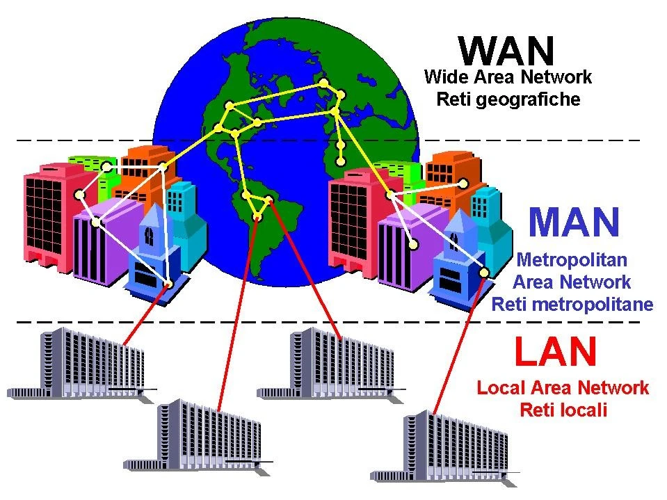
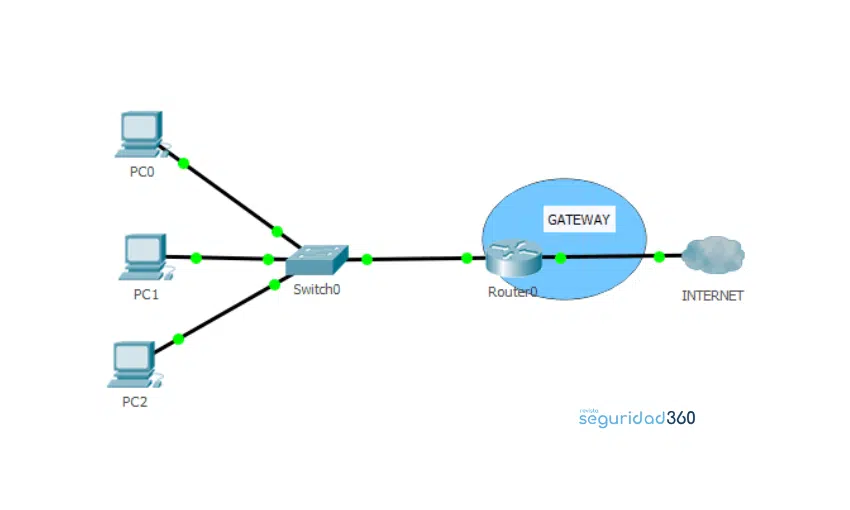
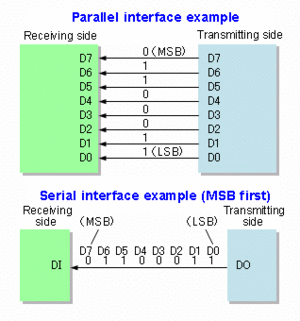

Redes Informaticas
Las redes de computadoras
Razones para instalar redes
Desde sus inicios una de las razones para instalar redes era compartir recursos,
como discos, impresoras y trazadores. Ahora existen además otras razones:
Disponibilidad del software de redes.- El disponer de un software multiusuario de
calidad que se ajuste a las necesidades de la empresa. Por ejemplo: Se puede
diseñar un sistema de puntos de venta ligado a una red local concreta. El software
de redes puede bajar los costos si se necesitan muchas copias del software.
Trabajo en común.- Conectar un conjunto de computadoras personales formando
una red que permita que un grupo o equipo de personas involucrados en proyectos
similares puedan comunicarse fácilmente y compartir programas o archivos de un
mismo proyecto.
Actualización del software.- Si el software se almacena de forma centralizada en un
servidor es mucho más fácil actualizarlo. En lugar de tener que actualizarlo
individualmente en cada uno de los PC de los usuarios, pues el administrador tendrá
que actualizar la única copia almacenada en el servidor.
Copia de seguridad de los datos.- Las copias de seguridad son más simples, ya que
los datos están centralizados.
Ventajas en el control de los datos.- Como los datos se encuentran centralizados en
el servidor, resulta mucho más fácil controlarlos y recuperarlos. Los usuarios pueden
transferir sus archivos vía red antes que usar los disquetes.
Uso compartido de las impresoras de calidad.- Algunos periféricos de calidad de alto
costo pueden ser compartidos por los integrantes de la red. Entre estos: impresoras
láser de alta calidad, etc.
Correo electrónico y difusión de mensajes.- El correo electrónico permite que los
usuarios se comuniquen más fácilmente entre sí. A cada usuario se le puede
asignar un buzón de correo en el servidor. Los otros usuarios dejan sus mensajes en
el buzón y el usuario los lee cuando los ve en la red. Se pueden convenir reuniones
y establecer calendarios.
Ampliación del uso con terminales tontas.- Una vez montada la red local, pasa a ser
más barato el automatizar el trabajo de más empleados por medio del uso de
terminales tontas en la red.
Seguridad.- La seguridad de los datos puede conseguirse por medio de los
servidores que posean métodos de control, tanto software como hardware. Los
terminales tontos impiden que los usuarios puedan extraer copias de datos para
llevárselos fuera del edificio.
Las redes que aparecen en este esquema le ofrecen más analogías para ayudarlo a
comprender las redes informáticas.
Tipos de redes
Las redes según sea la utilización por parte de los usuarios puede ser: compartida o exclusiva.Redes dedicadas o exclusivas.
Son aquellas que por motivo de seguridad, velocidad o ausencia de otro tipo de red, conectan dos o más puntos de forma exclusiva. Este tipo de red puede estructurarse en redes punto a punto o redes multipunto.Redes punto a punto
Permiten la conexión en línea directa entre terminales y computadoras. La ventaja de este tipo de conexión se encuentra en la alta velocidad de transmisión y la seguridad que presenta al no existir conexión con otros usuarios. Su desventaja sería el precio muy elevado de este tipo de red.Redes multipunto
Permite la unión de varios terminales a su correspondiente computadora compartiendo una única línea de transmisión. La ventaja consiste en el abaratamiento de su costo, aunque pierde velocidad y seguridad. Este tipo de redes requiere amplificadores y difusores de señal o de multiplexores que permiten compartir líneas dedicadas.Redes compartidas
Son aquellas a las que se une un gran número de usuarios, compartiendo todas las necesidades de transmisión e incluso con transmisiones de otras naturalezas. Las redes más usuales son las de conmutación de paquetes y las de conmutación de circuitos.
Redes de conmutación de paquetes
Son redes en las que existen nodos de concentración con procesadores que regulan el tráfico de paquetes.(Paquete: es una pequeña parte de la información que cada usuario desea transmitir. Cada paquete se compone de la información, el identificador del destino y algunos caracteres de control).
Redes de conmutación de circuitos.- Son redes en las que los centros de conmutación establecen un circuito dedicado entre dos estaciones que se comunican.
Redes digitales de servicios integrados(RDSI).- Se basan en desarrollos tecnológicos de conmutación y transmisión digital. La RDSI es una red totalmente digital de uso general capaz de integrar una gran gama de servicios como son la voz, datos, imagen y texto. La RDSI requiere de la instalación de centrales digitales.

Las redes según los servicios que satisfacen a los usuarios se clasifican en:
Redes para servicios básicos de transmisión
Se caracterizan por dar servicio sin alterar la información que transmiten. De este tipo son las redes dedicadas, la red telefónica y las redes de conmutación de circuitos.Redes para servicios de valor añadido
Son aquellas que además de realizar la transmisión de información, actúan sobre ella de algún modo. Pertenecen a este tipo de red: las redes que gestionan mensajería, transferencia electrónica de fondos, acceso a grandes bases de datos, videotex, teletex, etc.Las redes según la propiedad a la que pertenezcan pueden ser:
Redes privadas
Son redes gestionadas por personas particulares, empresas u organizaciones de índole privado. A ellas sólo tienen acceso los terminales de los propietarios.Redes públicas
Son las que pertenecen a organismos estatales, y se encuentran abiertas a cualquier usuario que lo solicite mediante el correspondiente contrato. Ej: Redes telegráficas, redes telefónicas, redes especiales para transmisión de datos.Las redes según la cobertura del servicio pueden ser:
Redes de área local (LAN)
Son redes que interconectan equipos dentro de un entorno físico reducido. En general no se extiende más allá de un edificio, recinto o campus. Las redes de área local (Local Area Network) son redes de ordenadores cuya extensión es del orden de entre 10 metros a 1 kilómetro. Son redes pequeñas, habituales en oficinas, colegios y empresas pequeñas, que generalmente usan la tecnología de broadcast, es decir, aquella en que a un sólo cable se conectan todas las máquinas. Como su tamaño es restringido, el peor tiempo de transmisión de datos es conocido, siendo velocidades de transmisión típicas de LAN las que van de 10 a 100 Mbps (Megabits por segundo).Redes MAN (Metropolitan Area Network)
Son redes de ordenadores de tamaño superior a una LAN, soliendo abarcar el tamaño de una ciudad. Son típicas de empresas y organizaciones que poseen distintas oficinas repartidas en un mismo área metropolitana, por lo que, en su tamaño máximo, comprenden un área de unos 10 kilómetros.Redes WAN (Wide Area Network)
Tienen un tamaño superior a una MAN, y consisten en una colección de host o de redes LAN conectadas por una subred. Esta subred está formada por una serie de líneas de transmisión interconectadas por medio de routers, aparatos de red encargados de rutear o dirigir los paquetes hacia la LAN o host adecuado, enviándose éstos de un router a otro. Su tamaño puede oscilar entre 100 y 1000 kilómetros.
Redes internet
Un internet es una red de redes, vinculadas mediante ruteadores gateways. Un gateway o pasarela es un computador especial que puede traducir información entre sistemas con formato de datos diferentes. Su tamaño puede ser desde 10000 kilómetros en adelante, y su ejemplo más claro es Internet, la red de redes mundial.¿Que es un gateway?
Un gateway o puerta de enlace es un dispositivo que permite la comunicación entre redes, ya sean informáticas o de internet.Qué hace
Conecta dos redes informáticas de distinto tipo
Permite compartir recursos entre computadoras
Modifica el empaquetamiento de la información de la red de origen para que se adapte a la red de destino
Enruta el tráfico desde la red local hacia los dispositivos en las redes remotas
Cómo funciona
Actúa como un punto de parada para los datos en su camino hacia otras redes
Traduce los datos de un protocolo empleado en una red al protocolo utilizado en la red de destino
Ejemplos de gateway Un router, Un servidor, Un firewall.
Usos
Conectar una red local a Internet
Simplificar la conectividad a Internet en un solo dispositivo
Permitir que los dispositivos de una red puedan comunicarse con los dispositivos de la otra red

Clasificación de las redes según la tecnología de transmisión
Redes de Broadcast
Aquellas redes en las que la transmisión de datos se realiza por un sólo canal de comunicación, compartido entonces por todas las máquinas de la red. Cualquier paquete de datos enviado por cualquier máquina es recibido por todas las de la red.Redes Point-To-Point
Aquellas en las que existen muchas conexiones entre parejas individuales de máquinas. Para poder transmitir los paquetes desde una máquina a otra a veces es necesario que éstos pasen por máquinas intermedias, siendo obligado en tales casos un trazado de rutas mediante dispositivos routers.
Clasificación de las redes según el tipo de transferencia de datos que soportan:
Transmisión Simplex
La transmisión de datos se produce en un solo sentido. Siempre existen un nodo emisor y un nodo receptor que no cambian sus funciones.Transmisión Half-Duplex
La transmisión de los datos se produce en ambos sentidos pero alternativamente, en un solo sentido a la vez. Si se está recibiendo datos no se puede transmitir.Transmisión Full-Duplex
La transmisión de los datos se produce en ambos sentidos al mismo tiempo. Un extremo que esta recibiendo datos puede, al mismo tiempo, estar transmitiendo otros datos.Transmisión Asíncrona
Cada byte de datos incluye señales de arranque y parada al principio y al final. La misión de estas señales consiste en:1. Avisar al receptor de que está llegando un dato.
2. Darle suficiente tiempo al receptor de realizar funciones de sincronismo antes de que llegue el siguiente byte.
Transmisión Sincrónica
Se utilizan canales separados de reloj que administran la recepción y transmisión de los datos. Al inicio de cada transmisión se emplean unas señales preliminares llamadas:Bytes de sincronización en los protocolos orientados a byte.
Flags en los protocolos orientados a bit.
Su misión principal es alertar al receptor de la llegada de los datos.
Nota: Las señales de reloj determinan la velocidad a la cual se transmite o recibe.
Medios y formas de transmisión
Medios
Aéreos: basados en señales radio-eléctricas (utilizan la atmósfera como medio de transmisión), en señales de rayos láser o rayos infrarrojos.Sólidos: principalmente el cobre en par trenzado o cable coaxial y la fibra óptica.
Formas
Transmisión en Serie: los bits se transmiten de uno a uno sobre una línea única. Se utiliza para transmitir a larga distancia.Transmisión en Paralelo: los bits se transmiten en grupo sobre varias líneas al mismo tiempo. Es utilizada dentro de la computadora.

La transmisión en paralela es más rápida que la transmisión en serie pero en la medida que la distancia entre equipos se incrementa (no debe sobrepasarse la distancia de 30 mts aprox.), no solo se encarecen los cables sino que además aumenta la complejidad de los transmisores y los receptores de la línea a causa de la dificultad de transmitir y recibir señales de pulsos a través de cables largos.
Clasificación de las computadoras según su uso en la red
Las podemos dividir en 3 grupos Servidores: son computadoras que “sirven” algún recurso al resto de las computadoras de una red. Estos recursos pueden ser impresoras, lectoras de CD, espacio en disco rígido, conexión a internet, archivos, aplicaciones, etc. De acuerdo a los servicios y recursos que pueden brindar los servidores, los dividimos en:- Servidor de archivos
- Servidor de impresión
- Servidor de acceso a Internet
- Servidor de aplicaciones
- Servidor Web
- Servidor de Correo
- Servidor controlador de dominio
- Servidor de Bases de Datos
Clientes: son computadoras que no ofrecen ningún recurso a la red, pero que utilizan los de los servidores, es decir por ejemplo que navegan a Internet a traves de un servidor, que guardan la información en otro, etc. En muchos casos, por cuestiones de seguridad, se los suele separar. Pares: son computadoras que ofrecen recursos a la red y que también utilizan recursos de servidores.
TOPOLOGIAS DE RED
Los diferentes componentes que van a formar una red se pueden interconectar o unir de diferentes formas, siendo la forma elegida un factor fundamental que va a determinar el rendimiento y la funcionalidad de la red.La disposición de los diferentes componentes de una red se conoce con el nombre de topología de la red. La topología idónea para una red concreta va a depender de diferentes factores, como el número de máquinas a interconectar, el tipo de acceso al medio físico que deseemos, etc. Las Principales topologías de red son:
Topología de bus
La topología de bus tiene todos sus nodos conectados directamente a un enlace y no tiene ninguna otra conexión entre nodos. Físicamente cada host está conectado a un cable común, por lo que se pueden comunicar directamente, aunque la ruptura del cable hace que los hosts queden desconectados. La topología de bus permite que todos los dispositivos de la red puedan ver todas las señales de todos los demás dispositivos, lo que puede ser ventajoso si desea que todos los dispositivos obtengan esta información. Sin embargo, puede representar una desventaja, ya que es común que se produzcan problemas de tráfico y colisiones, que se pueden paliar segmentando la red en varias partes.
Topología de anillo
Una topología de anillo se compone de un solo anillo cerrado formado por nodos y enlaces, en el que cada nodo está conectado solamente con los dos nodos adyacentes. Los dispositivos se conectan directamente entre sí por medio de cables en lo que se denomina una cadena margarita. Para que la información pueda circular, cada estación debe transferir la información a la estación adyacente.
Topología de anillo doble
Una topología en anillo doble consta de dos anillos concéntricos, donde cada host de la red está conectado a ambos anillos, aunque los dos anillos no están conectados directamente entre sí. Es análoga a la topología de anillo, con la diferencia de que, para incrementar la confiabilidad y flexibilidad de la red, hay un segundo anillo redundante que conecta los mismos dispositivos. La topología de anillo doble actúa como si fueran dos anillos independientes, de los cuales se usa solamente uno por vez.Topología en estrella
La topología en estrella tiene un nodo central desde el que se irradian todos los enlaces hacia los demás nodos. Por el nodo central, generalmente ocupado por un hub, pasa toda la información que circula por la red.La ventaja principal es que permite que todos los nodos se comuniquen entre sí de manera conveniente. La desventaja principal es que si el nodo central falla, toda la red se desconecta.

Topología en estrella extendida
La topología en estrella extendida es igual a la topología en estrella, con la diferencia de que cada nodo que se conecta con el nodo central también es el centro de otra estrella. Generalmente el nodo central está ocupado por un hub o un switch, y los nodos secundarios por hubs.La ventaja de esto es que el cableado es más corto y limita la cantidad de dispositivos que se deben interconectar con cualquier nodo central.
La topología en estrella extendida es sumamente jerárquica, y busca que la información se mantenga local. Esta es la forma de conexión utilizada actualmente por el sistema telefónico.

Topología en árbol
La topología en árbol es similar a la topología en estrella extendida, salvo en que no tiene un nodo central. En cambio,un nodo de enlace troncal, generalmente ocupado por un hub o switch, desde el que se ramifican los demás nodos. El enlace troncal es un cable con varias capas de ramificaciones, y el flujo de información es jerárquico. Conectado en el otro extremo al enlace troncal generalmente se encuentra un host servidor.
Topología en malla completa
En una topología de malla completa, cada nodo se enlaza directamente con los demás nodos. Las ventajas son que, como cada todo se conecta físicamente a los demás, creando una conexión redundante, si algún enlace deja de funcionar la información puede circular a través de cualquier cantidad de enlaces hasta llegar a destino. Además, esta topología permite que la información circule por varias rutas a través de la red. La desventaja física principal es que sólo funciona con una pequeña cantidad de nodos, ya que de lo contrario la cantidad de medios necesarios para los enlaces, y la cantidad de conexiones con los enlaces se torna abrumadora.Topología de red celular
La topología celular está compuesta por áreas circulares o hexagonales, cada una de las cuales tiene un nodo individual en el centro. La topología celular es un área geográfica dividida en regiones (celdas) para los fines de la tecnología inalámbrica. En esta tecnología no existen enlaces físicos; sólo hay ondas electromagnéticas. La ventaja obvia de una topología celular (inalámbrica) es que no existe ningún medio tangible aparte de la atmósfera terrestre o el del vacío del espacio exterior (y los satélites). Las desventajas son que las señales se encuentran presentes en cualquier lugar de la celda y, de ese modo, pueden sufrir disturbios y violaciones de seguridad.Como norma, las topologías basadas en celdas se integran con otras topologías, ya sea que usen la atmósfera o los satélites.

Topología irregular
En este tipo de topología no existe un patrón obvio de enlaces y nodos. El cableado no sigue un modelo determinado; de los nodos salen cantidades variables de cables. Las redes que se encuentran en las primeras etapas de construcción, o se encuentran mal planificadas, a menudo se conectan de esta manera.LA PLACA O TARJETA DE RED

Su función Las tarjetas de red, también denominadas NIC (Network Interface Cards, tarjetas de interfaz de red), actúan como la interfaz o conexión física entre el equipo y el cable de red. Las tarjetas están instaladas en una ranura de expansión en cada uno de los equipos y en el servidor de la red. Trabajan en la capa de enlace de datos del modelo OSI. Después de instalar la tarjeta de red, el cable de red se une al puerto de la tarjeta para realizar la conexión física entre el equipo y el resto de la red. La función de la tarjeta de red es:
- Preparar los datos del equipo para el cable de red.
- Enviar los datos a otro equipo.
- Controlar el flujo de datos entre el equipo y el sistema de cableado.
- Recibir los datos que llegan por el cable y convertirlos en bytes para que puedan ser comprendidos por la unidad de procesamiento central del equipo (CPU).
En un nivel más técnico, la tarjeta de red contiene el hardware y la programación firmware (rutinas software almacenadas en la memoria de sólo lectura, ROM) que implementa las funciones de Control de acceso al medio y Control de enlace lógico en el nivel de enlace de datos del modelo OSI.
Preparación de los datos
Antes de enviar los datos por la red, la tarjeta de red debe convertirlos de un formato que el equipo puede comprender a otro formato que permita que esos datos viajen a través del cable de red.Los datos se mueven por el equipo a través de unos caminos denominados buses. Realmente éstos son varios caminos de datos colocados uno al lado del otro. Como los caminos están juntos (paralelos), los datos se pueden mover en grupos en lugar de ir de forma individual (serie).
A los buses más antiguos, como aquellos utilizados en el primer equipo personal de IBM, se les conoce como buses de 8 bits porque en un momento dado podían mover 8 bits de datos. El equipo PC/AT utilizó un bus de 16 bits, lo que significa que en un momento dado podía mover 16 bits de datos. Los equipos actuales utilizan buses de 32 bits. Cuando los datos circulan en un bus del equipo, se dice que están circulando de forma paralela porque los 32 bits se están moviendo juntos. Piense en un bus de 32 bits como en una autovía de 32 carriles con 32 coches circulando juntos (de forma paralela), cada uno llevando un bit de datos.
Sin embargo, en un cable de red, los datos deben circular en un solo flujo de bits. Cuando los datos circulan en un cable de red se dice que están circulando en una transmisión en serie, porque un bit sigue a otro. En otras palabras, el cable es una autovía de un solo carril, y los datos siempre circulan en una sola dirección. El equipo puede estar enviando o recibiendo datos, pero nunca podrá estar haciendo las dos cosas al mismo tiempo. La tarjeta de red toma los datos que circulan en paralelo y los reestructura, de forma que circulen por el cable de la red, que es un camino en serie de un bit. Esto se consigue convirtiendo las señales digitales del equipo en señales ópticas o eléctricas que pueden circular por los cables de la red. La componente responsable de esto es el transceptor (transmisor/receptor).

Direcciones de red
Además de la transformación de los datos, la tarjeta de red también tiene que anunciar su propia localización, o dirección, al resto de la red para diferenciarla de las demás tarjetas de red.Una comisión del Institute of Electrical and Electronics Engineers (IEEE) asigna bloques de direcciones a cada fabricante de tarjetas de red. Los fabricantes graban las direcciones en los chips de la tarjeta mediante un proceso conocido como «marcado» de la dirección en la tarjeta. Con este proceso, cada tarjeta de red (y, por tanto, cada equipo) tiene una dirección única en la red.
La tarjeta de red también participa en otras funciones, como tomar datos del equipo y prepararlos para el cable de la red:
- El equipo y la tarjeta de red deben estar en comunicación para pasar datos desde el equipo a la tarjeta. En las tarjetas que pueden utilizar acceso directo a memoria (DMA), el equipo asigna una pequeña parte de su espacio de memoria a la tarjeta de red.
- La tarjeta de red envía una señal al equipo, pidiendo los datos del equipo.
- El bus del equipo traslada los datos desde la memoria del equipo a la tarjeta de red. A menudo, los datos se mueven más deprisa por el bus o el cable de lo que la tarjeta de red puede gestionarlos, y entonces los datos se envían al búfer de la tarjeta, una parte reservada de la RAM. Aquí se mantienen temporalmente durante la transmisión y recepción de los datos.

Envío y control de datos
Antes de que la tarjeta de red emisora envíe datos a la red, mantiene un diálogo electrónico con la tarjeta de red receptora, de forma que ambas tarjetas se pongan de acuerdo en lo siguiente:- Tamaño máximo de los grupos de datos que van a ser enviados.
- Cantidad de datos que se van a enviar antes de que el receptor de su confirmación.
- Intervalos de tiempo entre las cantidades de datos enviados.
- Cantidad de tiempo que hay que esperar antes de enviar la confirmación.
- Cantidad de datos que puede tener cada tarjeta antes de que haya desbordamiento.
- Velocidad de la transmisión de datos.
Si una tarjeta de red más moderna, rápida y sofisticada necesita comunicarse con una tarjeta de red más lenta y antigua, ambas necesitan encontrar una velocidad de transmisión común a la que puedan adaptarse. Algunas tarjetas de red más modernas incorporan circuitos que permiten que las tarjetas más rápidas se ajusten a la velocidad de las tarjetas más lentas.
Cada tarjeta de red le indica a la otra sus parámetros, aceptando o rechazando los parámetros de la otra tarjeta. Después de haber determinado todos los detalles de comunicación, las dos tarjetas comienzan a enviar y a recibir datos.
Opciones y parámetros de configuración
Las tarjetas de red a menudo tienen una serie de opciones que se deben configurar para que la tarjeta funcione apropiadamente. Algunos de los diseños más antiguos utilizan interruptores DIP externos. Algunos ejemplos de opciones que se pueden configurar:- Interrupción (IRQ).
- Las tarjetas de red más antiguas se configuran por medio de software, jumpers, o una combinación de los dos; consulte la documentación de la tarjeta para ver la configuración software o jumpers apropiados. Las tarjetas más modernas utilizan la tecnología Plug and Play (PnP); como consecuencia, las tarjetas más antiguas que necesitan una configuración manual, han quedado obsoletas.
- Dirección del puerto base de Entrada/Salida (E/S).
- Dirección base de memoria.
- Transceptor.
Líneas de petición de interrupción (IRQ)
Las líneas de petición de interrupción (IRQ) son líneas hardware por las que dispositivos como puertos de E/S, teclado, unidades de disco y tarjetas de red, pueden enviar interrupciones o peticiones al microprocesador del equipo.Las líneas de petición de interrupción se incorporan en el hardware interno del equipo, y se les asignan diferentes niveles de prioridad, de forma que el microprocesador pueda determinar la importancia de las peticiones de servicios recibidas.
Cuando la tarjeta de red envía una petición al equipo, utiliza una interrupción (envía una señal electrónica a la CPU del equipo). Cada dispositivo del equipo debe utilizar una línea de petición de interrupción diferente. La línea de interrupción se especifica cuando se configura el dispositivo. Algunos ejemplos son:
.png) Para la tarjeta de red se pueden utilizar IRQ3 o IRQ5, en la mayoría de los casos. Si se encuentra disponible,
se recomienda IRQ5, y es la que se utiliza por omisión para la mayoría de los sistemas. Para conocer qué IRQ
están siendo utilizadas, utilice una herramienta de diagnóstico del sistema.
Para la tarjeta de red se pueden utilizar IRQ3 o IRQ5, en la mayoría de los casos. Si se encuentra disponible,
se recomienda IRQ5, y es la que se utiliza por omisión para la mayoría de los sistemas. Para conocer qué IRQ
están siendo utilizadas, utilice una herramienta de diagnóstico del sistema. Puerto base de E/S
El puerto base de E/S especifica un canal por donde fluye la información entre el hardware del equipo (como la tarjeta de red) y su CPU. El puerto es para la CPU como una dirección.Cada dispositivo hardware en un sistema debe tener un número de puerto base de E/S diferente. Los números de puerto, en formato hexadecimal (sistema que utiliza base 16 en lugar de base 10 para su numeración) de la tabla que se muestra a continuación, normalmente están disponibles para asignar a una tarjeta de red, a menos que ya se estén usando. Aquellas que se muestran con un dispositivo al lado, son direcciones que normalmente se utilizan para los dispositivos. Compruebe la documentación del equipo para determinar las direcciones que ya están siendo utilizadas.
Configuración del puerto base de E/S

Dirección de memoria base
La dirección de memoria base identifica una posición en la memoria (RAM) de un equipo. La tarjeta de red utiliza esta posición como un área de búfer para guardar los datos que llegan y que salen. A este parámetro, a veces se le denomina dirección de inicio RAM.Una trama de datos es un paquete de información transmitido como una unidad en una red. A menudo, la dirección base de memoria para una tarjeta de red es D8000. (Para algunas tarjetas de red, el cero final se elimina de la dirección base de memoria, por ejemplo, D8000 sería D800.) Cuando una tarjeta de red se configura, se debe seleccionar una dirección de memoria base que no esté siendo utilizada por otro dispositivo.
Las tarjetas de red que no utilizan la RAM del sistema no tienen un parámetro para la dirección de memoria base. Algunas tarjetas de red contienen un parámetro que permite especificar la cantidad de memoria que hay que anular para guardar las tramas de datos. Por ejemplo, para algunas tarjetas se pueden especificar 16 KB o 32 KB de memoria. Cuanta más memoria se especifique, mayor será el rendimiento en la red, pero quedará menos memoria disponible para otros usos.
Selección del transceptor
La tarjeta de red puede tener otros parámetros que deben ser definidos durante la configuración. Por ejemplo, algunas tarjetas vienen con un transceptor externo y otro incluido en la tarjeta.Normalmente la elección de la tarjeta se realiza con jumpers. Los jumpers son pequeños conectores que se conectan a dos pines para determinar los circuitos que utilizará la tarjeta.
Compatibilidad de tarjetas, buses y cables
Para asegurar la compatibilidad entre el equipo y la red, la tarjeta debe tener las siguientes características:1. Coincidir con la estructura interna del equipo (arquitectura del bus de datos).
2. Tener el tipo de conector de cable apropiado para el cableado. Por ejemplo, una tarjeta que funciona en la comunicación de un equipo Apple en una red en bus, no funcionará en un equipo de IBM en un entorno de anillo: el anillo de IBM necesita tarjetas que son físicamente diferentes de las utilizadas en un bus; y Apple utiliza un método de comunicación de red diferente.
Arquitectura del bus de datos
En un entorno de equipos personales, existen cuatro tipos de arquitecturas de bus: ISA, EISA, Micro Channel y PCI. Cada uno de los tipos es físicamente diferente a los demás. Es imprescindible que la tarjeta de red y el bus coincidan.Arquitectura estándar de la industria (ISA)
ISA es la arquitectura utilizada en equipos IBM PC, XT y AT, así como en sus clones. Permite incorporar al sistema varios adaptadores por medio de conectores de placas que se encuentran en las ranuras o slots de expansión. En 1984 ISA se amplió de 8 bits a 16 bits cuando IBM introdujo el equipo IBM PC/AT. ISA hace referencia a la propia ranura de expansión (una ranura de 8 bits o de 16 bits). Las ranuras de 8 bits son más pequeñas que las de 16 bits, que realmente constan de dos ranuras o conectores, una junto a la otra. Una tarjeta de 8 bits podría estar en un slot de 16 bits, pero una de 16 bits no podría estar en una de 8 bits.ISA fue la arquitectura estándar de equipos personales hasta que Compaq y otras compañías desarrollaron el bus EISA.
Arquitectura estándar ampliada de la industria (EISA)
Es el estándar de bus introducido en 1988 por una asociación de nueve compañías de la industria de los equipos: AST Research, Compaq, Epson, Hewlett-Packard, NEC, Olivetti, Tandy, Wyse Technology y Zenith.EISA ofrece un camino de datos de 32 bits y mantiene la compatibilidad con ISA, además de ofrecer una serie de características adicionales introducidas por IBM en su Bus de Arquitectura Micro Channel.
Arquitectura Micro Channel
En 1988, IBM introdujo este estándar al tiempo que se anunció su equipo PS/2. La arquitectura Micro Channel es física y eléctricamente incompatible con el bus ISA. A diferencia del bus ISA, las funciones Micro Channel son buses de 16 o 32 bits y se pueden controlar de forma independiente por varios procesadores de control (master) del bus.Interconexión de componentes periféricos (PCI)
Es un bus local de 32 bits utilizado en la mayoría de los equipos Pentium y en las Apple Power Macintosh. La arquitectura de bus PCI actual posee la mayoría de los requerimientos para ofrecer la funcionalidad Plug and Play. Plug and Play es una filosofía de diseño y un conjunto de especificaciones de la arquitectura de un equipo personal. El objetivo de Plug and Play es permitir los cambios realizados en la configuración de un equipo personal, sin intervención del usuario.Conectores y cableado de red
La tarjeta de red realiza tres funciones importantes coordinando las actividades entre el equipo y el cableado:- Realiza la conexión física con el cable.
- Genera las señales eléctricas que circulan por el cable.
- Controla el acceso al cable siguiendo unas reglas específicas.
Cada tipo de cable tiene características físicas diferentes, a las que la tarjeta de red debe adaptarse. Cada tarjeta se ha construido para aceptar al menos un tipo de cable. Actualmente el cable de par trenzado y el de fibra óptica son los tipos de cables más comunes.
Algunas tarjetas de red tienen más de un conector de interfaz. Por ejemplo, es común que una tarjeta de red tenga un conector Thinnet, uno Thicknet y uno para par trenzado.
Si una tarjeta tiene más de un conector de interfaz y no tiene detección de interfaz predeterminada, debe realizar una selección configurando jumpers en la propia tarjeta o usando una opción seleccionable por software. La documentación de la tarjeta de red debe contener información sobre cómo se puede configurar la tarjeta de forma apropiada.
Una conexión de red Thicknet utiliza un cable de interfaz de conexión de unidad (AUI) 15-pin para conectar el conector 15-pin (DB-15) de la parte posterior de la tarjeta de red a un transceiver externo. El transceiver externo utiliza un conector del tipo «vampiro» para conectar el cable thicknet.
El puerto del joystick y el puerto del transceiver externo AUI son parecidos, pero algunos pines del joystick tienen una tensión de 5 voltios, lo que podría ser perjudicial tanto para el hardware de la red como para el equipo. Es necesario familiarizarse con la configuración hardware específica para determinar si el conector es para un joystick o para una tarjeta de red. De manera similar, tenga cuidado de no confundir los puertos SCSI de 25 pines con los puertos de impresora paralelos. Algunos dispositivos SCSI más antiguos se comunicaban a través del mismo tipo de conector DB-25 que estos puertos paralelos, pero ningún dispositivo funcionará cuando se enchufe en un conector erróneo.
Una conexión de par trenzado utiliza un conector RJ-45.El conector RJ-45 es similar al conector telefónico RJ-11, pero tiene un tamaño mayor y tiene ocho conductores; un RJ-11 sólo tiene cuatro conductores.
Rendimiento de la red
Debido al efecto que causa en la transmisión de datos, la tarjeta de red produce un efecto bastante significativo en el rendimiento de toda la red. Si la tarjeta es lenta, los datos no se moverán por la red con rapidez. En una red en bus, donde no se puede utilizar la red hasta que el cable esté libre, una tarjeta lenta puede incrementar el tiempo de espera para todos los usuarios.Después de identificar los requerimientos físicos de la tarjeta de red (el bus del equipo, el tipo de conector que necesita la tarjeta, el tipo de red donde operará), es necesario considerar otros factores que afectarán a las posibilidades de la tarjeta.
Aunque todas las tarjetas de red se ajustan a ciertos estándares y especificaciones mínimas, algunas características de las tarjetas mejoran de forma importante el servidor, el cliente y todo el rendimiento de la red.
Se puede incrementar la velocidad de los datos a través de la tarjeta incorporando las siguientes mejoras:
- Acceso directo a memoria (DMA). Con este método, el equipo pasa los datos directamente desde el búfer de la tarjeta de red a la memoria del equipo, sin utilizar el microprocesador del equipo.
- Memoria de tarjeta compartida. En este método, la tarjeta de red contiene RAM que comparte con el equipo. El equipo identifica esta RAM como si realmente estuviera instalada en el equipo.
- Memoria del sistema compartida. En este sistema, el procesador de la tarjeta de red selecciona una parte de la memoria del equipo y la utiliza para procesar datos.
- Bus mastering (Control de bus). Con el bus mastering, la tarjeta de red toma temporalmente el control del bus del equipo, evitando la CPU del equipo y llevando los datos directamente a la memoria del sistema del equipo. Esto incrementa la velocidad de las operaciones del equipo, liberando al procesador del equipo para realizar otras tareas. Las tarjetas con bus mastering pueden ser caras, pero pueden mejorar el rendimiento de la red de un 20 a un 70 por 100. Las tarjetas de red EISA, Micro Channel y PCI ofrecen bus mastering.
- RAM buffering. A menudo el tráfico en la red va demasiado deprisa para que la mayoría de las tarjetas de red puedan controlarlo. Los chips de RAM en la tarjeta de red sirven de búfer. Cuando la tarjeta recibe más datos de los que puede procesar inmediatamente, el buffer de la RAM guarda algunos de los datos hasta que la tarjeta de red pueda procesarlos. Esto acelera el rendimiento de la tarjeta y ayuda a evitar que haya un cuello de botella en la tarjeta.
- Microprocesador de la tarjeta. Con un microprocesador, la tarjeta de red no necesita que el equipo le ayude a procesar los datos. La mayoría de las tarjetas incorporan sus propios procesadores que aceleran las operaciones de la red.
Placas para servidores
Debido al alto volumen de tráfico en la red, los servidores deberían estar equipados con tarjetas del mayor rendimiento posible.Placas para estaciones de trabajo
Las estaciones de trabajo pueden utilizar las tarjetas de red más baratas, si las actividades principales en la red están limitadas a aplicaciones, como procesamiento de texto, que no generan altos volúmenes de tráfico en la red. Aunque recuerde que en una red en bus, una tarjeta de red lenta puede incrementar el tiempo de espera para todos los usuarios. Otras aplicaciones, como las de bases de datos o ingeniería, se vendrán abajo rápidamente con tarjetas de red inadecuadas.Tarjetas de red especializadas
En la mayoría de las situaciones, bastará con utilizar tarjetas estándar para conectar el equipo con la red física, pero existen algunas situaciones que requieren el uso de conexiones de red especializadas y, por tanto, necesitarán tarjetas de red especializadas.Placas de red Inalámbricas
Algunos entornos requieren una alternativa a las redes de equipo cableadas. Existen tarjetas de red sin hilos que soportan los principales sistemas operativos de red.Las tarjetas de red sin hilos suelen incorporar una serie de características. Éstas incluyen: Antena omnidireccional interior y cable de antena.
Software de red para hacer que la tarjeta de red funcione en una red en particular.
Software de diagnóstico para localización de errores. Software de instalación.
Estas tarjetas de red se pueden utilizar para crear una LAN totalmente sin hilos, o para incorporar estaciones sin hilos a una LAN cableada.
Normalmente, estas tarjetas de red se utilizan para comunicarse con un componente llamada concentrador sin hilos que actúa como un transceptor para enviar y recibir señales.
Tarjetas de red de fibra óptica
Conforme la velocidad de transmisión aumenta para acomodarse a las aplicaciones con un gran ancho de banda y los flujos de datos multimedia son comunes en las intranets actuales, las tarjetas de red de fibra óptica permiten conexiones directas a redes de fibra óptica de alta velocidad. Recientemente, estas tarjetas han llegado a tener un precio competitivo, y su uso es cada vez más corriente.PROM de inicialización remota
En algunos entornos, la seguridad es tan importante que las estaciones de trabajo no tienen unidades de disquete individuales. Sin éstas, los usuarios no pueden copiar la información en un disquete o disco duro y, por tanto, no pueden sacar los datos de su lugar de trabajo.Sin embargo, como los equipos normalmente se arrancan desde una unidad de disquete o desde un disco duro, tiene que existir otra fuente para que el software inicie (arranque) el equipo y lo conecte a la red. En estos entornos, la tarjeta de red puede ser equipada con un chip especial llamado PROM (memoria programable de sólo lectura) de inicialización remota que contenga el código que inicie el equipo y conecte al usuario a la red. Con las PROM de inicialización remota, las estaciones de trabajo sin disco se pueden unir a la red cuando se inician.
MEDIOS FISICOS DE TRANSMISION DE INFORMACION EN LAS REDES (TIPOS DE CABLES)
Una vez creadas las señales que nos van a permitir la transmisión de la información, es necesario un puente, un medio físico por el que dichas señales se desplacen desde el host emisor al host destino. Este medio físico puede ser de diferente naturaleza, y la red resultante se clasificará de acuerdo con él.Los tipos principales de medios físicos son el cableado de cobre, el cableado de fibra óptica y la propia atmósfera, usada en transmisiones sin cable, mediante radiofrecuencias, satélites, etc. Generalmente, en redes LAN, que son las que nos ocupan ahora, se usa cableado de cobre, en sus diferentes modalidades, para la unión de host generales, reservándose el uso de cableado de fibra óptica para la unión de nodos principales (backbone).
Cableado de cobre
El cableado de cobre es, como hemos dicho, el medio más común de unión entre host y dispositivos en redes locales. Los principales tipos de cables de cobre usados son:Conductor cilíndrico externo hueco que rodea os elementos conductores. Uno de estos es un conductor de cobre. Está rodeado re este material aislador hay una malla de úa como segundo alambre del circuito, y segunda capa de blindaje ayuda a reducir se encuentra recubierto por la envoltura
Para las LAN, el cable coaxial ofrece varias ventajas. Se pueden realizar tendidos entre nodos de red a mayores distancias que con los cables STP o UTP (unos 500 metros), sin que sea necesario utilizar tantos repetidores. El cable coaxial es más económico que el cable de fibra óptica y la tecnología es sumamente conocida. Se ha usado durante muchos años para todo tipo de comunicaciones de datos.
El cable coaxial viene en distintos tamaños. El cable de mayor diámetro se especificó para su uso como cable de backbone de Ethernet porque históricamente siempre poseyó mejores características de longitud de transmisión y limitación del ruido. Este tipo de cable coaxial frecuentemente se denomina thicknet o red gruesa. Como su apodo lo indica, debido a su diámetro este tipo de cable puede ser demasiado rígido como para poder instalarse con facilidad en algunas situaciones. La regla práctica es: cuanto más difícil es instalar los medios de red, más cara resulta la instalación. El cable coaxial resulta más costoso de instalar que el cable de par trenzado. Hoy en día el cable thicknet no se usa casi nunca, salvo en instalaciones especiales.
En el pasado, el cable coaxial con un diámetro externo de solamente 0,35 cm (a veces denominado thinnet o red fina) se usaba para las redes Ethernet. Era particularmente útil para instalaciones de cable en las que era necesario que el cableado tuviera que hacer muchas vueltas. Como la instalación era más sencilla, también resultaba más económica. Por este motivo algunas personas lo llamaban cheapernet o red barata. Sin embargo, como el cobre exterior o trenzado metálico del cable coaxial comprende la mitad del circuito eléctrico, se debe tener especial cuidado para garantizar su correcta conexión a tierra. Esto se hace asegurándose de que haya una sólida conexión eléctrica en ambos extremos del cable. Sin embargo, a menudo, los instaladores omiten hacer esto. Como resultado, la mala conexión del blindaje resulta ser una de las fuentes principales de problemas de conexión en la instalación del cable coaxial. Estos problemas producen ruido eléctrico que interfiere con la transmisión de la señal a través de los medios de networking. Es por este motivo que, a pesar de su diámetro pequeño, thinnet ya no se utiliza con tanta frecuencia en las redes Ethernet.
Para conectar cables coaxiales se utilizan los conectores BNC, simples y en T, y al final del cable principal de red hay que situar unas resistencias especiales, conocidas como resistores, para evitar la reflexión de las ondas de señal.
2. Par trenzado blindado (STP): formado por una capa exterior plástica aislante y una capa interior de papel metálico, dentro de la cual se sitúan normalmente cuatro pares de cables, trenzados para a par, con revestimientos plásticos de diferentes colores para su identificación. Combina las técnicas de blindaje, cancelación y trenzado de cables. Según las especificaciones de uso de las instalaciones de red Ethernet, STP proporciona resistencia contra la interferencia electromagnética y de la radiofrecuencia sin aumentar significativamente el peso o tamaño del cable. El cable de par trenzado blindado tiene las mismas ventajas y desventajas que el cable de par trenzado no blindado. STP brinda mayor protección contra todos los tipos de interferencia externa, pero es más caro que el cable de par trenzado no blindado.
A diferencia del cable coaxial, el blindaje en el STP no forma parte del circuito de datos y, por lo tanto, el cable debe estar conectado a tierra en ambos extremos. Normalmente, los instaladores conectan STP a tierra en el armario para el cableado y el hub, aunque esto no siempre es fácil de hacer, especialmente si los instaladores intentan usar paneles de conexión antiguos que no fueron diseñados para cable STP. Si la conexión a tierra no está bien realizada, el STP puede transformarse en una fuente de problemas, ya que permite que el blindaje actúe como si fuera una antena, absorbiendo las señales eléctricas de los demás hilos del cable y de las fuentes de ruido eléctrico que provienen del exterior del cable.
No es posible realizar tendidos de cable STP tan largos como con otros medios de networking (como, por ejemplo, cable coaxial) sin repetir la señal, siendo la longitud máxima de cable recomendada de unos 100 metros, y su rendimiento suele ser de 10-100 Mbps.
Se especifica otro tipo de STP para instalaciones Token Ring. En este tipo de cable, conocido como STP de 150 ohmios, el cable no sólo está totalmente blindado para reducir la interferencia electromagnética y de radiofrecuencia, sino que a su vez cada par de hilos trenzados se encuentra blindado con respecto a los demás para reducir la diafonía. Si bien el blindaje empleado en el cable de par trenzado blindado de 150 ohmios no forma parte del circuito, como sucede con el cable coaxial, aún así debe estar conectado a tierra en ambos extremos. Este tipo de cable STP requiere una cantidad mayor de aislamiento y de blindaje. Estos factores se combinan para aumentar de manera considerable el tamaño, peso y costo del cable. También requiere la instalación de grandes armarios y conductos para el cableado, lujos que en muchos edificios antiguos no pueden permitirse.
Para la conexión de los cables STP a los diferentes dispositivos de red se usan unos conectores específicos, denominados conectores STP, similares a los RJ-45 descritos más abajo.
3. Par trenzado no blindado (UTP): compuesto por cuatro pares de hilos, trenzados para a par, y revestidos de un aislante plástico de colores para la identificación de los pares. Cada par de hilos se encuentra aislado de los demás. Este tipo de cable se basa sólo en el efecto de cancelación que producen los pares trenzados de hilos para limitar la degradación de la señal que causan la EMI y la RFI. Para reducir aún más la diafonía entre los pares en el cable UTP, la cantidad de trenzados en los pares de hilos varía. Al igual que el cable STP, el cable UTP debe seguir especificaciones precisas con respecto a cuanto trenzado se permite por unidad de longitud del cable.
Cuando se usa como medio de networking, el cable UTP tiene cuatro pares de hilos de cobre de calibre 22 ó 24. El UTP que se usa como medio de networking tiene una impedancia de 100 ohmios. Esto lo diferencia de los otros tipos de cables de par trenzado, como, por ejemplo, los que se utilizan para los teléfonos. Como el UTP tiene un diámetro externo de aproximadamente 0,43 cm, el hecho de que su tamaño sea pequeño puede ser ventajoso durante la instalación. Como el UTP se puede usar con la mayoría de las arquitecturas de networking principales, su popularidad va en aumento.
El cable de par trenzado no blindado presenta muchas ventajas. Es de fácil instalación y es más económico que los demás tipos de medios de networking. De hecho, el cable UTP cuesta menos por metro que cualquier otro tipo de cableado de LAN, sin embargo, la ventaja real es su tamaño. Como su diámetro externo es tan pequeño, el cable UTP no llena los conductos para el cableado tan rápidamente como sucede con otros tipos de cables. Este puede ser un factor sumamente importante para tener en cuenta, en especial si se está instalando una red en un edificio antiguo. Además, si se está instalando el cable UTP con un conector RJ, las fuentes potenciales de ruido de la red se reducen enormemente y prácticamente se garantiza una conexión sólida y de buena calidad.
Sin embargo, el cableado de par trenzado también tiene una serie de desventajas. El cable UTP es más sensible al ruido eléctrico y la interferencia que otros tipos de medios de networking. Además, en una época el cable UTP era considerado más lento para transmitir datos que otros tipos de cables. Sin embargo, hoy en día ya no es así.
De hecho, en la actualidad, se considera que el cable UTP es el más rápido entre los medios basados en cobre.
La distancia máxima recomendada entre repetidores es de 100 metros, y su rendimiento es de 10-100 Mbps.
Para conectar el cable UTP a los distintos dispositivos de red se usan unos conectores especiales, denominados RJ-45 (Registered Jack-45), muy parecidos a los típicos conectores del cableado telefónico casero.
Este conector reduce el ruido, la reflexión y los problemas de estabilidad mecánica y se asemeja al enchufe telefónico, con la diferencia de que tiene ocho conductores en lugar de cuatro. Se considera como un componente de networking pasivo ya que sólo sirve como un camino conductor entre los cuatro pares del cable trenzado de Categoría 5 y las patas de la toma RJ-45. Se considera como un componente de la Capa 1, más que un dispositivo, dado que sirve sólo como camino conductor para bits.
Los enchufes o conectores RJ-45 se insertan en jacks o receptáculos RJ-45. Los jacks RJ-45 tienen 8 conductores, que se ajustan a los del conector RJ-45. En el otro lado del jack RJ-45 hay un bloque de inserción donde los hilos individuales se separan y se introducen en ranuras mediante una herramienta similar a un tenedor denominada herramienta de punción.
Para centralizar los diferentes conectores RJ-45 se utilizan unos dispositivos especiales, denominados paneles de conexión. Vienen provistos de 12, 24 ó 48 puertos y normalmente están montados en un bastidor. Las partes delanteras son jacks RJ-45, las partes traseras son bloques de punción que proporcionan conectividad o caminos conductores.
Conexiones RJ-45
En el entorno de trabajo de redes LAN Ethernet 10BaseT (y superiores), que va a ser el más común en la práctica, todos los cableados horizontales se realizan mediante cable UTP y conectores RJ-45.Ahora bien, dependiendo del uso concreto que se le vaya a dar al cable de unión, este puede adoptar varias configuraciones, que van a definir las conexiones entre los diferentes pines de los conectores RJ-45 inicial y final del cable. En las explicaciones que siguen trabajaremos siempre con la parte correspondiente al clip del RJ-45 situada en la parte inferior de las imágenes, es decir, consideramos el RJ- 45 cogido en la mano con la parte correspondiente a la conexión con el Jack hacia afuera, y la pestaña de enganche hacia abajo.
Conexión Straight Trough
Este tipo de conexión se usa en cables que van a conectar un host a una red Ethernet 10BaseT. Generalmente, un extremo del cable (terminal A) se conecta al Jack de la tarjeta de red del host, mientras que el otro extremo (terminal B) se conecta a un hub central. El esquema de conexiones es el que sigue:Observamos que las conexiones se realizan entre iguales, por lo que el cable de un color determinado se conecta en ambas terminales al mismo pin del RJ-45. Es una conexión directa.
Conexión Cross-Over
Se utilizan en el aso de cables que deben unir dos host directamente, a través de sus correspondientes tarjetas de red. En este caso, es necesario realizar una inversión de cables en los pines terminales, para que cada cable activo cambie de funcionalidad (emisor o receptor) en cada uno de los Jacks. El esquema de este tipo de cables es el siguiente:| Conector 1 | Conector 2 |
|---|---|
| Naranja/Blanco | Verde/Blanco |
| Naranja | Verde |
| Verde/Blanco | Naranja/Blanco |
| Azul | Azul |
| Azul/Blanco | Azul/Blanco |
| Verde | Naranja |
| Marrón/Blanco | Marrón/Blanco |
| Marrón | Marrón |
Conexión Roll-Over
También denominada conexión de cable de consola, es la usada en cables de conexión a una terminal de consola de un router, por ejemplo. En ella, todos los cables van invertidos de posición, como si se reflejaran en un espejo, siendo su esquema el siguiente:| Conector 1 | Conector 2 |
|---|---|
| Naranja/Blanco | Marron |
| Naranja | Blanco/Marron |
| Verde/Blanco | Verde |
| Azul | Blanco/Azul |
| Azul/Blanco | Azul |
| Verde | Blanco/Verde |
| Marrón/Blanco | Naranja |
| Marrón | Blanco/Naranja |
Preparación de un cable
Vamos a explicar a continuación de forma detallada el modo correcto de preparar un cable UTP con conectores RJ-45.Las herramientas necesarias serán:
* Un trozo de cable UTP, de longitud adecuada. Generalmente, los cables vienen en bobinas de diferentes longitudes, contenidas en una caja de cartón. Para cortar el trozo de cable necesario usaremos una herramienta cortante adecuada, bien afilada, como un cortacables o la parte cortadora de una grimpeadora.
* Dos conectores RJ-45, nuevos y de calidad.
* Un pelacables, para retirar correctamente los aislantes plásticos de las terminaciones del cable y de los hilos.
* Una grimpeadora, aparato especialmente concebido para fijar los cables a los conectores RJ-45 mediante presión.
* Un gráfico del esquema de cableado. Esto es muy importante, ya que si nos equivocamos en las conexiones, el cable no valdrá, quedando inutilizados los conectores.
* Un analizador de cables, para comprobar la correcta finalización del cable construido. Hay en el mercado diferentes marcas y modelos, siendo casi todos aptos para esta tarea.
Una vez preparados todos los materiales necesarios, los pasos a seguir son los siguientes:
- Cortamos el trozo de cable necesario. Los estándares 568-B recomiendan que la longitud máxima para un cable de conexión host-red no supere los 3 metros.
- Pelamos los extremos del cable, quitando el revestimiento exterior de plástico en una longitud adecuada. La idea es que el cable, al ser insertado posteriormente en el Jack, tenga protección externa justo hasta la entrada a los pines. Si queda más porción sin revestimiento el cable queda suelto y se incrementan las pérdidas de señal, y si queda menos las conexiones no se harán de forma correcta.
- Separamos los cables, los destrenzamos y los disponemos según el esquema adecuado.
- Los aplanamos y los recortamos de tal forma que la longitud de los hilos no trenzados sea de unos 12 milímetros, distancia idónea para la perfecta conexión. No hay que preocuparse de "pelar" los extremos de los hilos, ya que al ser presionados luego con la grimpeadora se realiza este proceso de forma natural.
- Insertamos los cables en el conector RJ-45 y los empujamos hasta el fondo, asegurándonos de que llegan hasta el final, de tal forma que se puedan ver los hilos cuando se mira el conector desde el extremo.
- Inspeccionamos que la distribución de hilos por colores esté de acuerdo con el esquema.
- Engarzamos los hilos al conector con la grimpeadora, ejerciendo una buena presión en ésta, para que la conexión se realice correctamente.
- Hacemos lo mismo con el otro extremo del cable.
- Comprobamos la correcta conexión del cable mediante un analizador de cables. El método de comprobación puede variar según el analizador usado, por lo que debemos consultar las instrucciones del mismo. Generalmente se conecta un extremo del cable al analizador, y el otro extremo a una pieza especial, de tal forma que, al conectar el analizador, nos dirá en pantalla si el cable está correctamente conectado o, en caso contrario, qué pares de hilos no lo están. Si seguimos correctamente estos pasos, dispondremos de un cable útil, construido de acuerdo con los estándares. Una vez tenemos el cable, éste se conectará por un extremo en el conector de la tarjeta de red del host, y por el otro generalmente en la toma Jack RJ-45 situada en la pared, que será la que nos dé acceso a la red. Si tenemos que instalar dicha toma, el proceso es análogo al visto de construcción de un cable, con la diferencia que ahora el propio Jack lleva unos códigos de colores que indican dónde debe ir cada hilo. Para insertar los hilos en los pines internos se usa una herramienta de punción especial, que ajusta el cable y lo pela de forma automática. Una vez conectados los hilos, tan sólo queda acoplar en Jack en la cajeta atornillada a la pared.
Categorías de cable UTP
El estándar TIA/EIA 568 especifica el cable le Categoría 5 como un medio para la transmisión de datos a frecuencias de hasta 100 MHz. El Modo de Transmisión Asíncrona (Asynchronous Transfer Mode ATM), trabaja a 155 MHz. La Gigabit Ethernet a 1 GHz.La necesidad de incrementar el ancho de banda nunca cesa, cuanto más se tenga, más se necesita. Las aplicaciones cada vez se vuelven más complejas, y los ficheros cada vez son más grandes. A medida que su red se vaya congestionando con más datos, la velocidad se va ralentizando y no volverá a ser rápida nunca más. Las buenas noticias son que la próxima generación de cableado está en marcha. Sin embargo, tendrá que tener cuidado con el cableado que esté instalado hoy, y asegurarse que cumplirá con sus necesidades futuras.
- Categoría 1. Hace referencia al cable telefónico UTP tradicional que resulta adecuado para transmitir voz, pero no datos. La mayoría de los cables telefónicos instalados antes de 1983 eran cables de Categoría 1.
- Categoría 2. Esta categoría certifica el cable UTP para transmisión de datos de hasta 4 megabits por segundo (mbps), Este cable consta de cuatro pares trenzados de hilo de cobre.
- Categoría 3. Esta categoría certifica el cable UTP para transmisión de datos de hasta 16 mbps. Este cable consta de cuatro pares trenzados de hilo de cobre con tres entrelazados por pie.
- Categoría 4. Esta categoría certifica el cable UTP para transmisión de datos de hasta 20 mbps. Este cable consta de cuatro pares trenzados de hilo de cobre.
- Categoría 5. Esta categoría certifica el cable UTP para transmisión de datos de hasta 100 mbps. Este cable consta de cuatro pares trenzados de hilo de cobre.
- Categoría 5a. También conocida como Categoría 5+ ó Cat5e. Ofrece mejores prestaciones que el estándar de Categoría 5. Para ello se deben cumplir especificaciones tales como una atenuación al ratio crosstalk (ARC) de 10 dB a 155 Mhz y 4 pares para la comprobación del Power Sum NEXT. Este estándar todavía no está aprobado
- Nivel 7. Proporciona al menos el doble de ancho de banda que la Categoría 5 y la capacidad de soportar Gigabit Ethernet a 100 m. El ARC mínimo de 10 dB debe alcanzarse a 200 Mhz y el cableado debe soportar pruebas de Power Sum NEXT, más estrictas que las de los cables de Categoría 5 Avanzada.
Cables de Fibra Óptica
En el cable de fibra óptica las señales que se transportan son señales digitales de datos en forma de pulsos modulados de luz. Esta es una forma relativamente segura de enviar datos debido a que, a diferencia de los cables de cobre que llevan los datos en forma de señales electrónicas, los cables de fibra óptica transportan impulsos no eléctricos.Esto significa que el cable de fibra óptica no se puede pinchar y sus datos no se pueden robar. El cable de fibra óptica es apropiado para transmitir datos a velocidades muy altas y con grandes capacidades debido a la carencia de atenuación de la señal y a su pureza. Pueden conducir transmisiones de luz moduladas. Si se compara con otros medios de networking, es más caro, sin embargo, no es susceptible a la interferencia electromagnética y ofrece velocidades de datos más altas que cualquiera de los demás tipos de medios de networking descritos aquí. El cable de fibra óptica no transporta impulsos eléctricos, como lo hacen otros tipos de medios de networking que usan cables de cobre. En cambio, las señales que representan a los bits se convierten en haces de luz.
Está compuesto por dos fibras envueltas en revestimientos separados. Si se observa una sección transversal de este cable, veremos que cada fibra óptica se encuentra rodeada por capas de material amortiguador protector, normalmente un material plástico como Kevlar, y un revestimiento externo. El revestimiento exterior protege a todo el cable. Generalmente es de plástico y cumple con los códigos aplicables de incendio y construcción. El propósito del Kevlar es brindar una mayor amortiguación y protección para las frágiles fibras de vidrio que tienen el diámetro de un cabello. Siempre que los códigos requieran que los cables de fibra óptica deban estar bajo tierra, a veces se incluye un alambre de acero inoxidable como refuerzo.
Las partes que guían la luz en una fibra óptica se denominan núcleo y revestimiento. El núcleo es generalmente un vidrio de alta pureza con un alto índice de refracción Cuando el vidrio del núcleo está recubierto por una capa de revestimiento de vidrio o de plástico con un índice de refracción bajo, la luz se captura en el núcleo de la fibra. Este proceso se denomina reflexión interna total y permite que la fibra óptica actúe como un "tubo de luz", guiando la luz a través de enormes distancias, incluso dando vuelta en codos.
La longitud máxima de cable recomendada entre nodos en de 2.000 metros, y su rendimiento es alto, de 100 0 más Mbps.
Composición del cable de fibra óptica
Una fibra óptica consta de un cilindro de vidrio extremadamente delgado, denominado núcleo, recubierto por una capa de vidrio concéntrica, conocida como revestimiento.Las fibras a veces son de plástico. El plástico es más fácil de instalar, pero no puede llevar los pulsos de luz a distancias tan grandes como el vidrio.
Debido a que los hilos de vidrio pasan las señales en una sola dirección, un cable consta de dos hilos en envolturas separadas. Un hilo transmite y el otro recibe. Una capa de plástico de refuerzo alrededor de cada hilo de vidrio y las fibras Kevlar ofrecen solidez. En el conector de fibra óptica, las fibras de Kevlar se colocan entre los dos cables. Al igual que sus homólogos (par trenzado y coaxial), los cables de fibra óptica se encierran en un revestimiento de plástico para su protección.
Las transmisiones del cable de fibra óptica no están sujetas a inter-modulaciones eléctricas y son extremadamente rápidas, comúnmente transmiten a unos 100 Mbps, con velocidades demostradas de hasta 1 gigabit por segundo (Gbps). Pueden transportar una señal (el pulso de luz) varios kilómetros. Consideraciones sobre el cable de fibra óptica El cable de fibra óptica se utiliza si necesita transmitir datos a velocidades muy altas y a grandes distancias en un medio muy seguro.
El cable de fibra óptica no se utiliza si tiene un presupuesto limitado ni tampoco si no tiene el suficiente conocimiento para instalar y conectar los dispositivos de forma apropiada.
El precio del cable de fibra óptica es competitivo con el precio del cable de cobre alto de gama. Cada vez se hace más sencilla la utilización del cable de fibra óptica, y las técnicas de pulido y terminación requieren menos conocimientos que hace unos años.
REDES INALAMBRICAS
El entorno inalámbrico o sin hilos es una opción de red, a veces apropiada y otras veces necesaria. Actualmente, los fabricantes ofrecen más productos a precios atractivos, lo que significa que en un futuro se incrementarán las ventas y la demanda. Conforme se incremente la demanda, el entorno sin hilos crecerá y mejorará.La frase «entorno sin hilos» es engañosa, ya que implica una red completamente libre de cableado. En la mayoría de los casos, esto no es cierto. Realmente la mayoría de las redes sin cables constan de componentes sin hilos que se comunican con una red que utiliza cableado, es una red de componentes mezclados llamada red híbrida. Posibilidades de las redes inalámbricas Las redes sin hilos están llamando la atención porque los componentes sin hilos pueden:
Ofrecer conexiones temporales a una red cableada existente. Ayudar a proporcionar respaldo a una red existente. Ofrecer algún grado de portabilidad.
Extender las redes más allá de los límites de las conexiones físicas.
Utilidad de la conexión de redes inalámbricas
La dificultad intrínseca en la instalación de las redes con cable es un factor que empujará a una mayor aceptación de los entornos sin cable. La conexión sin cable puede ser especialmente útil para redes:- En sitios concurridos, como áreas de recepción y salas de espera.
- Para usuarios que están constantemente moviéndose, como médicos y enfermeras en hospitales.
- Áreas y edificios aislados.
- Departamentos donde la ubicación física cambia frecuentemente y de forma no predecible.
- Estructuras, como construcciones históricas, donde el cableado representa un reto.
Tipos de redes sin inalámbricas
Las redes sin hilos se pueden dividir en tres categorías, basándose en su tecnología:- LAN.
- LAN extendidas.
- Computación móvil.
LAN
Excepto por el medio utilizado, una red sin hilos típica opera de forma similar a una red cableada: en cada una de los equipos se instala una tarjeta de red sin hilos con un transceptor, y los usuarios se comunican con la red como si estuvieran utilizando equipos con cables.Puntos de acceso
El transceptor, a veces llamado punto de acceso, transmite y recibe señales de los equipos circundantes y pasa datos entre los equipos sin hilos y la red cableada. Estas LAN sin hilos utilizan pequeños transceptores fijados en la pared para conectarse a la red con hilos. Estos transceptores establecen contacto por radio con los dispositivos de red portátiles. Observe que esto no es una verdadera LAN sin hilos, porque utiliza un transceptor colocado en la pared para conectarse a una LAN cableada estándar.Técnicas de transmisión
Las LAN sin hilos utilizan cuatro técnicas para transmitir datos:- Transmisión infrarroja.
- Transmisión láser.
- Transmisión por radio de banda estrecha (frecuencia única).
- Transmisión por radio de amplio espectro.
Hay cuatro tipos de redes infrarrojas:
- Redes de línea de visión. Como su nombre indica, esta versión de redes de infrarrojos transmite sólo si el transmisor y el receptor tienen una línea de visión despejada entre ellos.
- Redes infrarrojas de dispersión. En esta tecnología, las transmisiones emitidas rebotan en paredes y suelo y, finalmente, alcanzan el receptor. Éstas son efectivas en un área limitada de unos 30,5 metros.
- Redes reflectoras. Los transceptores ópticos situados cerca de los equipos transmiten a una posición común que redirige las transmisiones al equipo apropiado.
- Telepunto óptico de banda ancha. Esta LAN sin hilos infrarroja ofrece servicios de banda ancha y es capaz de ofrecer requerimientos multimedia de alta calidad que pueden alcanzar los ofrecidos por una red cableada. Aunque su velocidad y conveniencia están despertando interés, los infrarrojos tienen dificultad para transmitir a distancias mayores de 30,5 metros (100 pies). También están supeditados a interferencias de la fuerte luz ambiental que se encuentra en los entornos comerciales.
Transmisión por radio de banda estrecha (frecuencia única). Este método es similar a la transmisión desde una estación de radio. El usuario sintoniza el transmisor y el receptor a una cierta frecuencia. Ésta no necesita situarse en la línea de visión, porque el rango de transmisión es de 3.000 metros (9.842 pies). Sin embargo, como la señal es de alta frecuencia, está supeditada a la atenuación del acero y los muros.
La radio de banda estrecha es un servicio de suscripción. Los suministradores de este servicio tienen todos los requerimientos de licencia de la FCC u organismo nacional equivalente. Este método es relativamente lento; la transmisión está en el rango de los 4,8 Mbps.
Transmisión por radio de amplio espectro. La radio de amplio espectro transmite señales en un rango de frecuencias. Esto ayuda a evitar los problemas de las comunicaciones de banda estrecha.
Las frecuencias disponibles se dividen en canales, conocidos como hops o saltos, que se pueden comparar con una etapa de un viaje que incluye la intervención de una serie de paradas entre el punto de inicio y el destino. Los adaptadores de amplio espectro sintonizan en un hop específico por una cantidad de tiempo predeterminada, y después pasan a un hop diferente. Una secuencia de saltos determina la coordinación. Los equipos de la red están todas sincronizadas para coordinar el hop. Este tipo de señalización ofrece una cierta seguridad incorporada, ya que el algoritmo de salto de frecuencia de la red tendría que conocerse para obtener el flujo de datos. Para aumentar la seguridad y evitar que los usuarios no autorizados escuchen la emisión, el emisor y el receptor pueden cifrar la transmisión.
La tecnología de radio de amplio espectro ofrece una red realmente sin hilos. Por ejemplo, dos o más equipos equipados con adaptadores de red de amplio espectro y un sistema operativo con capacidades de red predeterminadas pueden actuar como una red Trabajo en Grupo sin cables de conexión. Además, las redes sin hilos se pueden vincular a una red existente añadiendo una interfaz apropiada a uno de los equipos de la red.
Aunque algunas implementaciones de radio de amplio espectro pueden ofrecer velocidades de transmisión de 4Mbps a distancias de unos 3,22 kilómetros (dos millas) en exteriores y 244 metros (800 pies) en interiores, la velocidad típica de 250 Kbps (Kilobits por segundo) hace que este método sea bastante más lento que otras opciones de red sin hilos.
Transmisión punto a punto
El método punto a punto de comunicación de datos no entra claramente dentro de las presentes definiciones de redes. Utiliza una tecnología punto a punto que transfiere datos desde un equipo a otro en lugar de comunicarse entre varios equipos y periféricos. Sin embargo, los componentes adicionales como transceptores de host y transceptores únicos están disponibles. Éstos se pueden implementar en equipos individuales o en equipos que ya están en una red para formar una red de transferencia de datos sin hilos.Esta tecnología implica la transferencia de datos serie sin hilos con estas características:
- Utiliza un enlace de radio punto a punto para la transmisión de datos rápida y libre de errores.
- Atraviesa paredes, techos y suelos.
- Soporta índices de datos desde 1,2 a 38,4 Kbps hasta 61 metros (200 pies) en interiores o unos 0,5 kilómetros (0.30 millas) con transmisión a la vista.
LAN extendidas
Otros tipos de componentes sin hilos pueden funcionar en un entorno LAN extendido, de forma similar a su contrapartida cableada. Por ejemplo, un bridge LAN sin hilos puede conectar redes separadas hasta 4,8 kilómetros (tres millas).Conexión sin hilos multipunto
Un bridge sin hilos es un componente que ofrece una forma sencilla de poder conectar edificios sin utilizar cables. De la misma forma que un puente ofrece un camino entre dos puntos, un bridge sin hilos ofrece una camino de datos entre dos edificaciones. Con variaciones que dependen de condiciones atmosféricas y geográficas, esta distancia puede ser superior a 4,8 kilómetros (tres millas).Aunque es costoso, tal componente se podría justificar porque elimina el gasto de las líneas alquiladas. Bridge sin hilos de gran alcance Si los bridges sin hilos no llegan lo suficientemente lejos, otra alternativa a considerar son los bridges sin hilos de gran alcance. Éstos también utilizan tecnología de radio de amplio espectro para ofrecer bridges Ethernet y Token Ring, pero para una distancia superior a 40 kilómetros (unas 25 millas).
Como con los bridges sin hilos originales, el coste del de gran alcance se podría justificar porque elimina la necesidad de la línea T1 o enlaces de microondas.
Una línea T1 es una línea de comunicaciones de alta velocidad que puede tener comunicaciones digitales y acceso a Internet a una velocidad de 1,544 Mbps.
Computación móvil
Las redes móviles sin hilos utilizan servicios telefónicos y servicios públicos para recibir y transmitir señales utilizando:- Comunicación de paquetes vía radio.
- Redes celulares.
- Estaciones de satélite.
Aunque esta forma de comunicación tiene sus ventajas, es lenta. La velocidad de transmisión oscila entre los 8 kbps y los 19,2 kbps. La velocidad es menor cuando se incluye la corrección de errores.
La computación móvil incorpora adaptadores sin hilos que utilizan tecnología telefónica celular para conectar equipos portátiles con redes cableadas. Los equipos portátiles utilizan pequeñas antenas para comunicarse con las torres de radio en áreas circundantes. Los satélites en órbita cercanos a la tierra recogen las señales de baja potencia de los dispositivos de redes móviles y portátiles.
Comunicación de paquetes vía radio
Este sistema divide una transmisión en paquetes. Un paquete es una unidad de información transmitida como un todo de un dispositivo a otro en la red. Estos paquetes de radio son similares a otros paquetes de la red. Éstos incluyen:- La dirección fuente.
- La dirección destino.
- Información de corrección de errores.
Redes celulares
Los datos de paquetes celulares digitales (Cellular Digital Packet Data, CDPD) utilizan la misma tecnología y algunos de los sistemas de los teléfonos móviles celulares. Ofrecen transmisiones de datos de equipo sobre redes de voz analógicas, siempre y cuando el sistema no esté ocupado. Ésta es una tecnología muy rápida que sufre retrasos de sólo unos segundos, haciéndola suficientemente fiable para transmisiones en tiempo real.Como en las restantes redes sin hilos, debe haber una forma de enlazar la red celular con una red cableada existente. Una unidad de interfaz Ethernet (EIU) puede ofrecer esta conexión.
Estaciones de satélite
Los sistemas de microondas son una buena opción para la interconexión de edificios en sistemas pequeños y con cortas distancias, como un campus o un parque industrial.La transmisión de microondas es actualmente el método de transmisión a larga distancia más utilizado. Es excelente para la comunicación entre dos puntos a la vista como:
- Enlaces de satélite a tierra.
- Entre dos edificios.
- A través de grandes áreas uniformes y abiertas, como extensiones de agua o desiertos.
- Dos transceptores de radio: uno para generar (estación de transmisión) y otro para recibir (estación de recepción) la transmisión.
- Dos antenas orientables apuntadas frente a frente para realizar la comunicación de la transmisión de señales por los transceptores. Estas antenas, a menudo, se instalan en torres para ofrecer un mayor rango y para evitar todo aquello que pudiera bloquear sus señales.
Transmisión de señales
Se pueden utilizar dos técnicas para transmitir las señales codificadas a través de un cable: la transmisión en banda base y la transmisión en banda ancha.Transmisión en banda base
Los sistemas en banda base utilizan señalización digital en un único canal. Las señales fluyen en forma de pulsos discretos de electricidad o luz. Con la transmisión en banda base, se utiliza la capacidad completa del canal de comunicación para transmitir una única señal de datos. La señal digital utiliza todo el ancho de banda del cable, constituyendo un solo canal. El término ancho de banda hace referencia a la capacidad de transferir datos, o a la velocidad de transmisión, de un sistema de comunicaciones digital, medido en bits por segundo (bps).La señal viaja a lo largo del cable de red y, por tanto, gradualmente va disminuyendo su intensidad, y puede llegar a distorsionarse. Si la longitud del cable es demasiado larga, la señal recibida puede no ser reconocida o puede ser tergiversada.
Como medida de protección, los sistemas en banda base a veces utilizan repetidores para recibir las señales y retransmitirlas a su intensidad y definición original. Esto incrementa la longitud útil de un cable.
Transmisión en banda ancha
Los sistemas de banda ancha utilizan señalización analógica y un rango de frecuencias. Con la transmisión analógica, las señales son continuas y no discretas. Las señales circulan a través del medio físico en forma de ondas ópticas o electromagnéticas. Con la transmisión en banda ancha, el flujo de la señal es unidireccional. Si el ancho de banda disponible es suficiente, varios sistemas de transmisión analógica, como la televisión por cable y transmisiones de redes, se pueden mantener simultáneamente en el mismo cable. A cada sistema de transmisión se le asigna una parte del ancho de banda total. Todos los dispositivos asociados con un sistema de transmisión dado, por ejemplo, todas los equipos que utilicen un cable LAN, deben ser configuradas, de forma que sólo utilicen las frecuencias que están dentro del rango asignado. Mientras que los sistemas de banda base utilizan repetidores, los sistemas de banda ancha utilizan amplificadores para regenerar las señales analógicas y su intensidad original. En la transmisión en banda ancha, las señales circulan en una sola dirección, de forma que debe existir dos caminos para el flujo de datos para que una señal alcance todos los dispositivos. Hay dos formas comunes de realizar esto:- A través de una configuración de banda ancha con división del medio, el ancho de banda se divide en dos canales, cada uno usando una frecuencia o rango de frecuencias diferentes. Un canal transmite señales y el otro las recibe.
- Configuración en banda ancha con doble cable, a cada dispositivo se unen dos cables. Un cable se utiliza para enviar y el otro para recibir.
Incremento del rendimiento del ancho de banda
El incremento de la velocidad de transmisión de datos es tan importante como el aumento del tamaño de la red y del tráfico de los datos. Maximizando el uso del canal de datos, podemos intercambiar más datos en menos tiempo. Al formato más básico de transmisión de datos o de información se le denomina unidireccional o simplex. Esto significa que los datos se envían en una única dirección, desde el emisor al receptor. Ejemplos de transmisiones unidireccionales son la radio y la televisión. Con la transmisión unidireccional, los problemas que se encuentran durante la transmisión no se detectan ni corrigen. Incluso el emisor no tiene seguridad de que los datos son recibidos.En el siguiente nivel de transmisión de datos, llamado transmisión alterna o half- duplex, los datos se envían en ambas direcciones, pero en un momento dado sólo se envían en una dirección. Ejemplos de tecnología que utilizan la comunicación alterna son las radios de onda corta y los walkie-talkies. Con la transmisión alterna se puede incorporar detección de errores y peticiones para reenvío de datos erróneos.
La World Wide Web es una forma de transmisión de datos alterna. Se envía una petición a una página Web y se espera mientras la está devolviendo. La mayoría de las comunicaciones por módem utilizan transmisión de datos alterna.
El método más eficiente para la transmisión de datos consiste en la utilización de la transmisión bidireccional o full-duplex, donde los datos pueden ser transmitidos y recibidos al mismo tiempo. Un buen ejemplo es una conexión de cable que no sólo permite que se reciban canales de televisión, sino que además soporta el teléfono y la conexión a Internet. Un teléfono es una conexión bidireccional porque permite hablar al mismo tiempo a las dos partes. Los módems, por diseño, son dispositivos alternos. Éstos envían o reciben datos, conmutando entre el modo de transmisión y el modo de recepción. Se puede crear un canal de módem bidireccional usando dos módems y dos líneas telefónicas. Lo único que se necesita es que los dos equipos estén conectados y configurados para soportar este tipo de comunicación.
TECNOLOGIAS DE LAN MÁS COMUNES
- Ethernet: topología de bus lógica y en estrella física o en estrella extendida.
- Token Ring: topología de anillo lógica y una topología física en estrella.
- FDDI: topología de anillo lógica y topología física de anillo doble.
Redes LAN Ethernet
Ethernet es la tecnología de red LAN más usada, resultando idóneas para aquellos casos en los que se necesita una red local que deba transportar tráfico esporádico y ocasionalmente pesado a velocidades muy elevadas. Las redes Ethernet se implementan con una topología física de estrella y lógica de bus, y se caracterizan por su alto rendimiento a velocidades de 10-100 Mbps.El origen de las redes Ethernet hay que buscarlo en la Universidad de Hawai, donde se desarrollo, en los años setenta, el Método de Acceso Múltiple con Detección de Portadora y Detección de Colisiones, CSMA/CD (Carrier Sense and Múltiple Access with Collition Detection), utilizado actualmente por Ethernet. Este método surgió ante la necesidad de implementar en las islas Hawai un sistema de comunicaciones basado en la transmisión de datos por radio, que se llamó Aloha, y permite que todos los dispositivos puedan acceder al mismo medio, aunque sólo puede existir un único emisor encada instante. Con ello todos los sistemas pueden actuar como receptores de forma simultánea, pero la información debe ser transmitida por turnos.
El centro de investigaciones PARC (Palo Alto Research Center) de la Xerox Corporation desarrolló el primer sistema Ethernet experimental en los años 70, que posteriormente sirvió como base de la especificación 802.3 publicada en 1980 por el Institute of Electrical and Electronic Engineers (IEEE).
Las redes Ethernet son de carácter no determinista, en la que los hosts pueden transmitir datos en cualquier momento. Antes de enviarlos, escuchan el medio de transmisión para determinar si se encuentra en uso. Si lo está, entonces esperan. En caso contrario, los host comienzan a transmitir. En caso de que dos o más host empiecen a transmitir tramas a la vez se producirán encontronazos o choques entre tramas diferentes que quieren pasar por el mismo sitio a la vez. Este fenómeno se denomina colisión, y la porción de los medios de red donde se producen colisiones se denomina dominio de colisiones.
Una colisión se produce pues cuando dos máquinas escuchan para saber si hay tráfico de red, no lo detectan y, acto seguido transmiten de forma simultánea. En este caso, ambas transmisiones se dañan y las estaciones deben volver a transmitir más tarde.
Para intentar solventar esta pérdida de paquetes, las máquinas poseen mecanismos de detección de las colisiones y algoritmos de postergación que determinan el momento en que aquellas que han enviado tramas que han sido destruidas por colisiones pueden volver a transmitirlas.
Existen dos especificaciones diferentes para un mismo tipo de red, Ethernet y IEEE 802.3. Ambas son redes de broadcast, lo que significa que cada máquina puede ver todas las tramas, aunque no sea el destino final de las mismas. Cada máquina examina cada trama que circula por la red para determinar si está destinada a ella. De ser así, la trama pasa a las capas superiores para su adecuado procesamiento. En caso contrario, la trama es ignorada.
Ethernet proporciona servicios correspondientes a la capa física y de enlace de datos del modelo de referencia OSI, mientras que IEEE 802.3 especifica la capa física y la porción de acceso al canal de la capa de enlace de datos, pero no define ningún protocolo de Control de Enlace Lógico.
Ethernet es una tecnología de broadcast de medios compartidos. El método de acceso CSMA/CD que se usa en Ethernet ejecuta tres funciones:
- Transmitir y recibir paquetes de datos.
- Decodificar paquetes de datos y verificar que las direcciones sean válidas antes de transferirlos a las capas superiores del modelo OSI.
- Detectar errores dentro de los paquetes de datos o en la red.
Formato de trama Ethernet
Según hemos visto, los datos generados en la capa de aplicación pasan a la capa de transporte, que los divide en segmentos, porciones de datos aptas para su transporte por res, y luego van descendiendo pos las sucesivas capas hasta llegar a los medios físicos. Conforme los datos van bajando por la pila de capas, paso a paso cada protocolo les va añadiendo una serie de cabeceras y datos adicionales; necesarios para poder ser enviados a su destino correctamente. El resultado final es una serie de unidades de información denominadas tramas, que son las que viajan de un host a otro.La forma final de la trama obtenida, en redes Ethernet, es la siguiente: Y los principales campos que la forman son:
- Preámbulo: Patrón de unos y ceros que indica a las estaciones receptoras que una trama es Ethernet o IEEE 802.3. La trama Ethernet incluye un byte adicional que es el equivalente al campo Inicio de Trama (SOF) de la trama IEEE 802.3.
- Inicio de trama (SOF): Byte delimitador de IEEE 802.3 que finaliza con dos bits 1 consecutivos, y que sirve para sincronizar las porciones de recepción de trama de todas las estaciones de la red. Este campo se especifica explícitamente en Ethernet.
- Direcciones destino y origen: Incluye las direcciones físicas (MAC) únicas de la máquina que envía la trama y de la máquina destino. La dirección origen siempre es una dirección única, mientras que la de destino puede ser de broadcast única (trama enviada a una sola máquina), de broadcast múltiple (trama enviada a un grupo) o de broadcast (trama enviada a todos los nodos).
- Tipo (Ethernet): Especifica el protocolo de capa superior que recibe los datos una vez que se ha completado el procesamiento Ethernet.
- Longitud (IEEE 802.3): Indica la cantidad de bytes de datos que sigue este campo.
- Datos: Incluye los datos enviados en la trama. En las especificación IEEE 802.3, si los datos no son suficientes para completar una trama mínima de 64 bytes, se insertan bytes de relleno hasta completar ese tamaño (tamaño mínimo de trama). Por su parte, las especificaciones Ethernet versión 2 no especifican ningún relleno, Ethernet espera por lo menos 46 bytes de datos.
- Secuencia de verificación de trama (FCS): Contiene un valor de verificación CRC (Control de Redundancia Cíclica) de 4 bytes, creado por el dispositivo emisor y recalculado por el dispositivo receptor para verificar la existencia de tramas dañadas. Cuando un paquete es recibido por el destinatario adecuado, les retira la cabecera de Ethernet y el checksum de verificación de la trama, comprueba que los datos corresponden a un mensaje IP y entonces lo pasa a dicho protocolo para que lo procese. El tamaño máximo de los paquetes en las redes Ethernet es de 1500 bytes.
Tipos de redes Ethernet
Existen por lo menos 18 variedades de Ethernet, relacionadas con el tipo de cableado empleado y con la velocidad de transmisión. Las tecnologías Ethernet más comunes y más importantes las son:- Ethernet 10Base2. Usa un cable coaxial delgado, por lo que se puede doblar más fácilmente, y además es más barato y fácil de instalar, aunque los segmentos de cable no pueden exceder de 200 metros y 30 nodos. Las conexiones se hacen mediante conectores en T, más fáciles de instalar y más seguros.
- Ethernet 10Base5. También llamada Ethernet gruesa, usa un cable coaxial grueso, consiguiendo una velocidad de 10 Mbps. Puede tener hasta 100 nodos conectados, con una longitud de cable de hasta 500 metros. Las conexiones se hacen mediante la técnica denominada derivaciones de vampiro, en las cuales se inserta un polo hasta la mitad del cable, realizándose la derivación en el interior de un transceiver, que contiene los elementos necesarios para la detección de portadores y choques. El transceiver se une al computador mediante un cable de hasta 50 metros.
- Ethernet 10Base-T. Cada estación tiene una conexión con un hub central, y los cables usados son normalmente de par trenzado. Son las LAN más comunes hoy en día. Mediante este sistema se palian los conocidos defectos de las redes 10BAse2 y 10Base5, a saber, la mala detección de derivaciones no deseadas, de rupturas y de conectores flojos. Como desventaja, los cables tienen un límite de sólo 100 metros, y los hubs pueden resultar caros.
- Ethernet 10Base-FX. Basada en el uso de fibra óptica para conectar las máquinas, lo que la hace cara para un planteamiento general de toda la red, pero idónea para la conexión entre edificios, ya que los segmentos pueden tener una longitud de hasta 2000 metros, al ser la fibra óptica insensible a los ruidos e interferencias típicos de los cables de cobre. Además, su velocidad de transmisión es mucho mayor.
- Fast Ethernet. Las redes 100BaseFx (IEEE 802.3u) se crearon con la idea de paliar algunos de los fallos contemplados en las redes Ethernet 10Base-T y buscar una alternativa a las redes FDDI Son también conocidas como redes Fast Ethernet, y están basadas en una topología en estrella para fibra óptica. Con objeto de hacerla compatible con Ethernet 10Base-T, la tecnología Fast Ethernet preserva los formatos de los paquetes y las interfaces, pero aumenta la rapidez de transmisión hasta los 100 Mbps. En la redes Fast Ethernet se usan cables de cuatro pares trenzados de la clase 3, uno de los cuales va siempre al hub central, otro viene siempre desde el hub, mientras que los otros dos pares son conmutables. En cuanto a la codificación de las señales, se sustituye la codificación Manchester por señalización ternaria, mediante la cual se pueden transmitir 4 bits a la vez. También se puede implementar Fast Ethernet con cableado de la clase 5 en topología de estrella (100BaseTX), pudiendo entonces soportar hasta 100 Mbps con transmisión full dúplex.
Redes LAN Token Ring
Las redes Token Ring son redes de tipo determinista, al contrario de las redes Ethernet. En ellas, el acceso al medio está controlado, por lo que solamente puede transmitir datos una máquina por vez, implementándose este control por medio de un token de datos, que define qué máquina puede transmitir en cada instante. Token Ring e IEEE 802.5 son los principales ejemplos de redes de transmisión de tokens. Las redes de transmisión de tokens se implementan con una topología física de estrella y lógica de anillo, y se basan en el transporte de una pequeña trama, denominada token, cuya posesión otorga el derecho a transmitir datos. Si un nodo que recibe un token no tiene información para enviar, transfiere el token al siguiente nodo. Cada estación puede mantener al token durante un período de tiempo máximo determinado, según la tecnología específica que se haya implementado. Cuando una máquina recibe un token y tiene información para transmitir, toma el token y le modifica un bit, transformándolo en una secuencia de inicio de trama. A continuación, agrega la información a transmitir a esta trama y la envía al anillo, por el que gira hasta que llega a la estación destino. Mientras la trama de información gira alrededor del anillo no hay ningún otro token en la red, por lo que ninguna otra máquina puede realizar transmisiones. Cuando la trama llega a la máquina destino, ésta copia la información contenida en ella para su procesamiento y elimina la trama, con lo que la estación emisora puede verificar si la trama se recibió y se copió en el destino. Como consecuencia de este método determinista de transmisión, en las redes Token Ring no se producen colisiones, a diferencia de las redes CSMA/CD como Ethernet. Además, en las redes Token Ring se puede calcular el tiempo máximo que transcurrirá antes de que cualquier máquina pueda realizar una transmisión, lo que hace que sean ideales para las aplicaciones en las que cualquier demora deba ser predecible y en las que el funcionamiento sólido de la red sea importante. La primera red Token Ring fue desarrollada por la empresa IBM en los años setenta, todavía sigue usándose y fue la base para la especificación IEEE 802.5 (método de acceso Token Ring), prácticamente idéntica y absolutamente compatible con ella. Actualmente, el término Token Ring se refiere tanto a la red Token Ring de IBM como a la especificación 802.5 del IEEE. Las redes Token Ring soportan entre 72 y 260 estaciones a velocidades de 4 a 16 Mbps, se implementan mediante cableado de par trenzado, con blindaje o sin él, y utilizan una señalización de banda base con codificación diferencial de Manchester.Tokens
Los tokens están formados por un byte delimitador de inicio, un byte de control de acceso y un byte delimitador de fin. Por lo tanto, tienen una longitud de 3 bytes.- El delimitador de inicio alerta a cada estación ante la llegada de un token o de una trama de datos/comandos. Este campo también incluye señales que distinguen al byte del resto de la trama al violar el esquema de codificación que se usa en otras partes de la trama.
- El byte de control de acceso contiene los campos de prioridad y de reserva, así como un bit de token y uno de monitor. El bit de token distingue un token de una trama de datos/comandos y un bit de monitor determina si una trama gira continuamente alrededor del anillo.
- El delimitador de fin señala el fin del token o de una trama de datos/comandos. Contiene bits que indican si hay una trama defectuosa y una trama que es la última de una secuencia lógica.
En las tramas de datos o instrucciones hay un byte de control de trama a continuación del byte de control de acceso. El byte de control de trama indica si la trama contiene datos o información de control. En las tramas de control, este byte especifica el tipo de información de control.
A continuación del byte de control de trama hay dos campos de dirección que identifican las estaciones destino y origen. Como en el caso de IEEE 802.5, la longitud de las direcciones es de 6 bytes. El campo de datos está ubicado a continuación del campo de dirección. La longitud de este campo está limitada por el token de anillo que mantiene el tiempo, definiendo de este modo el tiempo máximo durante el cual una estación puede retener al token.
Y a continuación del campo de datos se ubica el campo de secuencia de verificación de trama (FCS). La estación origen completa este campo con un valor calculado según el contenido de la trama. La estación destino vuelve a calcular el valor para determinar si la trama se ha dañado mientras estaba en tránsito. Si la trama está dañada se descarta. Como en el caso del token, el delimitador de fin completa la trama de datos/comandos.
Sistema de prioridad
Las redes Token Ring usan un sistema de prioridad sofisticado que permite que determinadas estaciones de alta prioridad usen la red con mayor frecuencia. Las tramas Token Ring tienen dos campos que controlan la prioridad: el campo de prioridad y el campo de reserva.Sólo las estaciones cuya prioridad es igual o superior al valor de prioridad que posee el token pueden tomar ese token. Una vez que se ha tomado el token y éste se ha convertido en una trama de información, sólo las estaciones cuyo valor de prioridad es superior al de la estación transmisora pueden reservar el token para el siguiente paso en la red. El siguiente token generado incluye la mayor prioridad de la estación que realiza la reserva. Las estaciones que elevan el nivel de prioridad de un token deben restablecer la prioridad anterior una vez que se ha completado la transmisión.
Mecanismos de control
Las redes Token Ring usan varios mecanismos para detectar y compensar los fallos de la red. Uno de estos mecanismos consiste en seleccionar una estación de la red Token Ring como el monitor activo. Esta estación actúa como una fuente centralizada de información de temporización para otras estaciones del anillo y ejecuta varias funciones de mantenimiento del anillo. Potencialmente cualquier estación de la red puede ser la estación de monitor activo.Una de las funciones de esta estación es la de eliminar del anillo las tramas que circulan continuamente. Cuando un dispositivo transmisor falla, su trama puede seguir circulando en el anillo e impedir que otras estaciones transmitan sus propias tramas; esto puede bloquear la red. El monitor activo puede detectar estas tramas, eliminarlas del anillo y generar un nuevo token.
La topología en estrella de la red Token Ring de IBM también contribuye a la confiabilidad general de la red. Las MSAU (unidades de acceso de estación múltiple) activas pueden ver toda la información de una red Token Ring, lo que les permite verificar si existen problemas y, de ser necesario, eliminar estaciones del anillo de forma selectiva.
Otro mecanismo de control de fallos de red es el conocido como Beaconing. Cuando una estación detecta la existencia de un problema grave en la red (por ejemplo, un cable roto), envía una trama de beacon. La trama de beacon define un dominio de error. Un dominio de error incluye la estación que informa acerca del error, su vecino corriente arriba activo más cercano (NAUN) y todo lo que se encuentra entre ellos.
Entones el beaconing inicia un proceso denominado auto-reconfiguración, en el que los nodos situados dentro del dominio de error automáticamente ejecutan diagnósticos. Este es un intento de reconfigurar la red alrededor de las áreas en las que hay errores. Físicamente, las MSAU pueden lograrlo a través de la reconfiguración eléctrica.
NOTA: Este tema sobre tipos de redes forma parte del curso "Fundamentos de redes de ordenadores", cuyos temarios han sido desarrollados exclusivamente por HTMLWeb, que también se encarga de las tutorías del mismo. Un curso práctico, de calidad y económico, con un 10% de descuento para los usuarios de HTMLWeb.
Redes LAN FDDI
Las redes FDDI (Fiber Distributed Data Interface - Interfaz de Datos Distribuida por Fibra ) surgieron a mediados de los años ochenta para dar soporte a las estaciones de trabajo de alta velocidad, que habían llevado las capacidades de las tecnologías Ethernet y Token Ring existentes hasta el límite de sus posibilidades.Están implementadas mediante una física de estrella (lo más normal) y lógica de anillo doble de token, uno transmitiendo en el sentido de las agujas del reloj (anillo principal) y el otro en dirección contraria (anillo de respaldo o back up), que ofrece una velocidad de 100 Mbps sobre distancias de hasta 200 metros, soportando hasta 1000 estaciones conectadas. Su uso más normal es como una tecnología de backbone para conectar entre sí redes LAN de cobre o computadores de alta velocidad.
El tráfico de cada anillo viaja en direcciones opuestas. Físicamente, los anillos están compuestos por dos o más conexiones punto a punto entre estaciones adyacentes. Los dos anillos de la FDDI se conocen con el nombre de primario y secundario. El anillo primario se usa para la transmisión de datos, mientras que el anillo secundario se usa generalmente como respaldo.
Se distinguen en una red FDDI dos tipos de estaciones: las estaciones Clase B, o estaciones de una conexión (SAS), se conectan a un anillo, mientras que las de Clase A, o estaciones de doble conexión (DAS), se conectan a ambos anillos.
Las SAS se conectan al anillo primario a través de un concentrador que suministra conexiones para varias SAS. El concentrador garantiza que si se produce una falla o interrupción en el suministro de alimentación en algún SAS determinado, el anillo no se interrumpa. Esto es particularmente útil cuando se conectan al anillo PC o dispositivos similares que se encienden y se apagan con frecuencia. Las redes FDDI utilizan un mecanismo de transmisión de tokens similar al de las redes Token Ring, pero además, acepta la asignación en tiempo real del ancho de banda de la red, mediante la definición de dos tipos de tráfico:
- Tráfico Síncrono: Puede consumir una porción del ancho de banda total de 100 Mbps de una red FDDI, mientras que el tráfico asíncrono puede consumir el resto.
- Tráfico Asíncrono: Se asigna utilizando un esquema de prioridad de ocho niveles. A cada estación se asigna un nivel de prioridad asíncrono.
El mecanismo de prioridad de la FDDI puede bloquear las estaciones que no pueden usar el ancho de banda síncrono y que tienen una prioridad asíncrona demasiado baja.
En cuanto a la codificación, FDDI no usa el sistema de Manchester, sino que implementa un esquema de codificación denominado esquema 4B/5B, en el que se usan 5 bits para codificar 4. Por lo tanto, dieciséis combinaciones son datos, mientras que las otras son para control.
Debido a la longitud potencial del amillo, una estación puede generar una nueva trama inmediatamente después de transmitir otra, en vez de esperar su vuelta, por lo que puede darse el caso de que en el anillo haya varias tramas a la vez.
Las fuentes de señales de los transceptores de la FDDI son LEDs (diodos electroluminiscentes) o lásers. Los primeros se suelen usar para tendidos entre máquinas, mientras que los segundos se usan para tendidos primarios de backbone.
Tramas FDDI
Las tramas en la tecnología FDDI poseen una estructura particular. Cada trama se compone de los siguientes campos:- Preámbulo, que prepara cada estación para recibir la trama entrante.
- Delimitador de inicio, que indica el comienzo de una trama, y está formado por patrones de señalización que lo distinguen del resto de la trama.
- Control de trama, que contiene el tamaño de los campos de dirección, si la trama contiene datos asíncronos o síncronos y otra información de control.
- Dirección destino, que contiene la dirección física (6 bytes) de la máquina destino, pudiendo ser una dirección unicast (singular), multicast (grupal) o broadcast (cada estación).
- Dirección origen, que contiene la dirección física (6 bytes) de la máquina que envió la trama.
- Secuencia de verificación de trama (FCS), campo que completa la estación origen con una verificación por redundancia cíclica calculada (CRC), cuyo valor depende del contenido de la trama. La estación destino vuelve a calcular el valor para determinar si la trama se ha dañado durante el tránsito. La trama se descarta si está dañada.
- Delimitador de fin, que contiene símbolos que indican el fin de la trama.
- Estado de la trama, que permite que la estación origen determine si se ha producido un error y si la estación receptora reconoció y copió la trama.
Medios en las redes FDDI
FDDI especifica una LAN de dos anillos de 100 Mbps con transmisión de tokens, que usa un medio de transmisión de fibra óptica.Aunque funciona a velocidades más altas, FDDI es similar a Token Ring. Ambas configuraciones de red comparten ciertas características, tales como su topología (anillo) y su método de acceso al medio (transferencia de tokens).
Una de las características de FDDI es el uso de la fibra óptica como medio de transmisión. La fibra óptica ofrece varias ventajas con respecto al cableado de cobre tradicional, por ejemplo:
- Seguridad: la fibra no emite señales eléctricas que se pueden interceptar.
- Confiabilidad: la fibra es inmune a la interferencia eléctrica.
- Velocidad: la fibra óptica tiene un potencial de rendimiento mucho mayor que el del cable de cobre.
Cuando se propagan múltiples modos de luz a través de la fibra, éstos pueden recorrer diferentes distancias, según su ángulo de entrada. Como resultado, no llegan a su destino simultáneamente; a este fenómeno se le denomina dispersión modal.
La fibra monomodo puede acomodar un mayor ancho de banda y permite el tendido de cables de mayor longitud que la fibra multimodo. Debido a estas características, la fibra monomodo se usa a menudo para la conectividad entre edificios mientras que la fibra multimodo se usa con mayor frecuencia para la conectividad dentro de un edificio. La fibra multimodo usa los LED como dispositivos generadores de luz, mientras que la fibra monomodo generalmente usa láser.
MODELO OSI
Durante las últimas dos décadas ha habido un enorme crecimiento en la cantidad y tamaño de las redes. Muchas de ellas sin embargo, se desarrollaron utilizando implementaciones de hardware y software diferentes. Como resultado, muchas de las redes eran incompatibles y se volvió muy difícil para las redes que utilizaban especificaciones distintas poder comunicarse entre sí. Para solucionar este problema, la Organización Internacional para la Normalización (ISO) realizó varias investigaciones acerca de los esquemas de red. La ISO reconoció que era necesario crear un modelo de red que pudiera ayudar a los diseñadores de red a implementar redes que pudieran comunicarse y trabajar en conjunto (interoperabilidad) y por lo tanto, elaboraron el modelo de referencia OSI en 1984.El concepto de capas le ayudará a comprender la acción que se produce durante el proceso de comunicación de una computadora a otro. El desplazamiento de objetos, sea este físico o lógico, se conoce como flujo. Existen muchas capas que ayudan a describir los detalles del proceso de flujo.
Evolución de las normas. El surgimiento del modelo OSI
Al principio de su desarrollo, las LAN, MAN y WAN eran en cierto modo caóticas. A principios de la década de los 80 se produjeron tremendos aumentos en la cantidad y el tamaño de las redes. A medida que las empresas se dieron cuenta de que podrían ahorrar mucho dinero y aumentar la productividad con la tecnología de networking, comenzaron a agregar redes y a expandir las redes existentes casi simultáneamente con la aparición de nuevas tecnologías y productos de red.A mediados de los 80, estas empresas debieron enfrentar problemas cada vez más serios debido a su expansión caótica. Resultaba cada vez más difícil que las redes que usaban diferentes especificaciones pudieran comunicarse entre sí. Se dieron cuenta que necesitaban salir de los sistemas de networking propietarios. Los sistemas propietarios se desarrollan, pertenecen y son controlados por organizaciones privadas. En la industria informática, propietario es lo opuesto de abierto, y significa que una empresa o un pequeño grupo de empresas controlan el uso de la tecnología. Abierto significa que el uso libre de la tecnología está disponible para todos.
Para enfrentar el problema de incompatibilidad de las redes y su imposibilidad de comunicarse entre sí, la Organización Internacional para la Normalización (ISO) estudió esquemas de red como DECNET, SNA y TCP/IP a fin de encontrar un conjunto de reglas. Como resultado de esta investigación, la ISO desarrolló un modelo de red que ayudaría a los fabricantes a crear redes que fueran compatibles y que pudieran operar con otras redes.
El proceso de dividir comunicaciones complejas en tareas más pequeñas y separadas se podría comparar con el proceso de construcción de un automóvil. Visto globalmente, el diseño, la fabricación y el ensamblaje de un automóvil es un proceso de gran complejidad. Es poco probable que una sola persona sepa cómo realizar todas las tareas requeridas para la construcción de un automóvil desde cero. Es por ello que los ingenieros mecánicos diseñan el automóvil, los ingenieros de fabricación diseñan los moldes para fabricar las partes y los técnicos de ensamblaje ensambla n una parte del auto. El modelo de referencia OSI (Nota: No debe confundir se con ISO.), lanzado Transmisora Medio R Dispositivo de Receptora en 1984, fue el esquema descriptivo que crearon. Este modelo proporcionó a los fabricantes un conjunto de estándares que aseguraron una mayor compatibilidad e interoperabilidad entre los distintos tipos de tecnología de red utilizados por las empresas a nivel mundial.
Propósito del modelo OSI
El modelo de referencia OSI es el modelo principal para las comunicaciones por red. Aunque existen otros modelos, en la actualidad la mayoría de los fabricantes de redes relacionan sus productos con El modelo de referencia OSI, especialmente cuando desean enseñar a los usuarios cómo utilizar sus productos. Los fabricantes consideran que es la mejor herramienta disponible para enseñar a enviar y recibir datos a través de una red. El modelo de referencia OSI permite que los usuarios vean las funciones de red que se producen en cada capa. Más importante aún, el modelo de referencia OSI es un marco que se puede utilizar para comprender cómo viaja la información a través de una red. Además, puede usar el modelo de referencia OSI para visualizar cómo la información o los paquetes de datos viajan desde los programas de aplicación (por ej., hojas de cálculo, documentos, etc.), a través de un entorno de red (por ej., cables, etc.), hasta otro programa de aplicación ubicado en otro computador de la red, aún cuando el remitente y el receptor tengan distintos tipos de red.En el modelo de referencia OSI, hay siete capas numeradas, cada una de las cuales ilustra una función de red particular. Esta división de las funciones de networking se denomina división en capas. La división de la red en siete capas presenta las siguientes ventajas:
- Divide la comunicación de red en partes más pequeñas y sencillas.
- Normaliza los componentes de red para permitir el desarrollo y el soporte de los productos de diferentes fabricantes.
- Permite a los distintos tipos de hardware y software de red comunicarse entre sí.
- Impide que los cambios en una capa puedan afectar las demás capas, de manera que se puedan desarrollar con más rapidez.
- Divide la comunicación de red en partes más pequeñas para simplificar el aprendizaje.
Las capas del modelo
El problema de trasladar información entre computadores se divide en siete problemas más pequeños y de tratamiento más simple en el modelo de referencia OSI. Cada uno de los siete problemas más pequeños está representado por su propia capa en el modelo. Las siete capas del modelo de referencia OSI son: Al estudiar una por una las capas del modelo de referencia OSI, comprenderá de qué manera los paquetes de datos viajan a través de una red y qué dispositivos operan en cada capa a medida que los paquetes de datos las atraviesan. Como resultado, comprenderá cómo diagnosticar las fallas cuando se presenten problemas de red especialmente durante el flujo de paquetes de datos.Función de cada capa
Cada capa individual del modelo OSI tiene un conjunto de funciones que debe realizar para que los paquetes de datos puedan viajar en la red desde el origen hasta el destino. A continuación, presentamos una breve descripción de cada capa del modelo de referencia OSI:Capa 7: La capa de aplicación
La capa de aplicación es la capa del modelo OSI más cercana al usuario; suministra servicios de red a las aplicaciones del usuario. Difiere de las demás capas debido a que no proporciona servicios a ninguna otra capa OSI, sino solamente a aplicaciones que se encuentran fuera del modelo OSI. Algunos ejemplos de dichos procesos de aplicación son los programas de hojas de cálculo, de procesamiento de texto y los de las terminales bancarias. La capa de aplicación establece la disponibilidad de los potenciales socios de comunicación, sincroniza y establece acuerdos sobre los procedimientos de recuperación de errores y control de la integridad de los datos. Si desea recordar la Capa 7 en la menor cantidad de palabras posible, piense en los navegadores de Web.Capa 6: La capa de presentación
La capa de presentación garantiza que la información que envía la capa de aplicación de un sistema pueda ser leída por la capa de aplicación de otro. De ser necesario, la capa de presentación traduce entre varios formatos de datos utilizando un formato común. Si desea recordar la Capa 6 en la menor cantidad de palabras posible, piense en un formato de datos común.Capa 5: La capa de sesión:
Como su nombre lo implica, la capa de sesión establece, administra y finaliza las sesiones entre dos hosts que se están comunicando. La capa de sesión proporciona sus servicios a la capa de presentación. También sincroniza el diálogo entre las capas de presentación de los dos hosts y administra su intercambio de datos. Además de regular la sesión, la capa de sesión ofrece disposiciones para una eficiente transferencia de datos, clase de servicio y un registro de excepciones acerca de los problemas de la capa de sesión, presentación y aplicación. Si desea recordar la Capa 5 en la menor cantidad de palabras posible, piense en diálogos y conversaciones.Capa 4: La capa de transporte
La capa de transporte segmenta los datos originados en el host emisor y los reensambla en una corriente de datos dentro del sistema del host receptor. El límite entre la capa de sesión y la capa de transporte puede imaginarse como el límite entre los protocolos de capa de medios y los protocolos de capa de host. Mientras que las capas de aplicación, presentación y sesión están relacionadas con aspectos de las aplicaciones, las tres capas inferiores se encargan del transporte de datos.La capa de transporte intenta suministrar un servicio de transporte de datos que aísla las capas superiores de los detalles de implementación del transporte. Específicamente, temas como la confiabilidad del transporte entre dos hosts es responsabilidad de la capa de transporte. Al proporcionar un servicio de comunicaciones, la capa de transporte establece, mantiene y termina adecuadamente los circuitos virtuales. Al proporcionar un servicio confiable, se utilizan dispositivos de detección y recuperación de errores de transporte. Si desea recordar la Capa 4 en la menor cantidad de palabras posible, piense en calidad de servicio y confiabilidad.
Capa 3: La capa de red:
La capa de red es una capa compleja que proporciona conectividad y selección de ruta entre dos sistemas de hosts que pueden estar ubicados en redes geográficamente distintas. Si desea recordar la Capa 3 en la menor cantidad de palabras posible, piense en selección de ruta, conmutación, direccionamiento y enrutamiento.Capa 2: La capa de enlace de datos
La capa de enlace de datos proporciona un tránsito de datos confiable a través de un enlace físico. Al hacerlo, la capa de enlace de datos se ocupa del direccionamiento físico (comparado con el lógico), la topología de red, el acceso a la red, la notificación de errores, entrega ordenada de tramas y control de flujo. Si desea recordar la Capa 2 en la menor cantidad de palabras posible, piense en tramas y control de acceso al medio.Capa 1: La capa física
La capa física define las especificaciones eléctricas, mecánicas, de procedimiento y funcionales para activar, mantener y desactivar el enlace físico entre sistemas finales. Las funciones principales de la Capa Física son:- Permitir la compatibilidad entre los diferentes tipos de conectores existentes.
- Definir las funciones que van a realizar cada uno de los pines de los conectores.
- Establecer el tipo de cableado que se debe usar en la red.
- Determinar la codificación, el voltaje de las señales y la duración de los pulsos eléctricos.
- Coordinar la modulación de las señales, si es necesario.
- Amplificar y retemporizar las señales en su viaje a través de los medios.
El párrafo anterior resume las operaciones generales que van a producirse en la Capa Física, y que detallamos a continuación:
- Las tramas formadas en la Capa de Enlace de Datos se unen una tras otra en lo que se conoce como "trenes de bits", sucesiones de ceros y unos lógicos que contienen toda la información necesaria para la comunicación de datos entre dos host. Estos trenes de bits deben ser convertidos en señales estándares capaces de viajar de forma correcta por los sucesivos cables (y atmósfera, en el caso de redes inalámbricas) que van a unir los host emisor y receptor, es decir, en impulsos eléctricos adecuados para la transmisión de datos. Generalmente, esta conversión bits-señales se lleva a cabo en ciertos chips constituyentes de la tarjeta de red del host emisor o en dispositivos especiales para tal fin, como los módems. Es por esto que en realidad debemos considerar las tarjetas de red como dispositivos pertenecientes tanto a la Capa de Enlace de Datos como a la Capa Física.
- Una vez creadas las señales, estas deben ser encaminadas a través del cableado que une los host emisor y destinatario. Para ello se precisan unos elementos de unión entre las placas madre de los host, las tarjetas de red o los módems y los cables en sí, elementos que pueden variar de una implementación de red a otra. Ejemplo de estos elementos de unión son los famosos conectores RJ-45 y los Jacks RJ-45 del cableado de par trenzado y los conectores en T de los cables coaxiales.
- Las señales viajan por los diferentes cables que forman la red o redes intermedias entre los host que se comunican. Pero puede suceder que las diferentes redes sean de topología diferente, por lo que habrá que disponer de elementos capaces de transformar un tipo de señales en otro. Estos elementos se denominan transceptores, y forman también parte de la Capa Física.
- Si la longitud de cableado que deben recorrer las señales es superior a unos determinados límites (que generalmente son de no muchos metros - 90 o 100 en el caso de cableado de par trenzado, por ejemplo-) será necesario amplificar y retemporizar las mismas, ya que perderán intensidad y claridad en el recorrido, llegando a hacerse ininteligibles. Para esta tarea se utilizan dispositivos especiales de red que actúan sobre las señales, denominados repetidores y hubs.
- Una vez las señales llegan al host destino, el proceso de codificación se invierte, transformando las señales recibidas en trenes de bits, capaces de ser interpretados por la pila de protocolos superiores, de tal forma que se recupere el mensaje original.
Encapsulamiento
Usted sabe que todas las comunicaciones de una red parten de un origen y se envían a un destino, y que la información que se envía a través de una red se denomina datos o paquete de datos. Si una computadora (host A) desea enviar datos a otro (host B), en primer término los datos deben empaquetarse a través de un proceso denominado encapsulamiento.El encapsulamiento rodea los datos con la información de protocolo necesaria antes de que se una al tránsito de la red. Por lo tanto, a medida que los datos se desplazan a través de las capas del modelo OSI, reciben encabezados, información final y otros tipos de información. Nota: La palabra "encabezado" significa que se ha agregado la información correspondiente a la dirección).
Para ver cómo se produce el encapsulamiento, examine la forma en que los datos viajan a través de las capas. Una vez que se envían los datos desde el origen, como se describe en la siguiente figura, viajan a través de la capa de aplicación directo hacia las otras capas. Como puede ver, el empaquetamiento y el flujo de los datos que se intercambian experimentan cambios a medida que las redes ofrecen sus servicios a los usuarios finales.
Las redes deben realizar los siguientes cinco pasos de conversión a fin de encapsular los datos:
- Crear los datos. Cuando un usuario envía un mensaje de correo electrónico, sus caracteres alfanuméricos se convierten en datos que pueden recorrer la internetwork.
- Empaquetar los datos para ser transportados de extremo a extremo. Los datos se empaquetan para ser transportados por la internetwork. Al utilizar segmentos, la función de transporte asegura que los hosts del mensaje en ambos extremos del sistema de correo electrónico se puedan comunicar de forma confiable.
- Anexar (agregar) la dirección de red al encabezado. Los datos se colocan en un paquete o datagrama que contiene el encabezado de red con las direcciones lógicas origen y destino. Estas direcciones ayudan a los dispositivos de red a enviar los paquetes a través de la red por una ruta seleccionada.
- Anexar (agregar) la dirección local al encabezado de enlace de datos. Cada dispositivo de la red debe poner el paquete dentro de una trama. La trama le permite conectarse al próximo dispositivo de red conectado directamente en el enlace. Cada dispositivo en la ruta de red seleccionada requiere el entramado para poder conectarse al siguiente dispositivo.
- Realizar la conversión a bits para su transmisión. La trama debe convertirse en un patrón de unos y ceros (bits) para su transmisión a través del medio (por lo general un cable). Una función de temporización permite que los dispositivos distingan estos bits a medida que se trasladan por el medio. El medio en la internetwork física de redes puede variar a lo largo de la ruta utilizada. Por ejemplo, el mensaje de correo electrónico puede originarse en una LAN, cruzar el backbone de un campus y salir por un enlace de WAN hasta llegar a su destino en otra LAN remota. Los encabezados y la información final se agregan a medida que los datos se desplazan a través de las capas del modelo OSI.
PROTOCOLO TCP/IP
Éste protocolo fue diseñado a finales de los 60’s como el fundamento de la red ARPANET que conectaba las computadoras de oficinas gubernamentales y universitarias. Funciona bajo el concepto de cliente servidor, lo que significa que alguna computadora pide los servicios de otra computadora; la primera es el cliente y la segunda el servidor. ARPANET evolucionó para lo que ahora se conoce como INTERNET y con ello también evolucionó el protocolo TCP/IP. Sin embargo la organización básica del protocolo sigue siendo la misma, se organiza en sólo tres niveles: el de red, transporte y aplicación.OSI
TCP/IP
6 : Aplicación5: Presentación
4:Sesión
3: Transporte
2: Red
1: Enlace de Datos
0: Física
En comparación con el protocolo OSI la capa de red de TCP/IP equivale a la capa de red de OSI. La capa de transporte de TCP/IP equivale a la capa de transporte de OSI y la capa de aplicación de TCP/IP equivale a las capas de sesión, presentación y aplicación todas en conjunto del protocolo OSI.
El protocolo TCP/IP no especifica nada a cerca del hardware de red por lo que las capas de enlace de datos y físicas no existen.
Capa de Red de TCP/IP.
Se encargan de ruteo de información a través de una red de área amplia. Existen dos protocolos en este nivel, uno de ellos conocido como IP (Internet Protocol) que es probablemente el protocolo de ruteo más utilizado y trabaja bajo el principio de direcciones enmascaradas; también existe una versión más simplificada de IP conocida como ICMP que se encarga de rutear paquetes sin ningún esquema de seguridad pero a mayor velocidad, se utiliza en particular para transmisión de e- mails.Capa de Transporte.
La capa de Transporte de TCP/IP ofrece dos protocolos: TCP para redes orientadas a conexiones y UDP para redes no orientadas a conexión. Un complementario a cerca de las capas de transporte TCP y UDP es que a diferencia de OSI pueden trabajar a nivel local sin necesidad de enrutamientos ni partición o segmentación de paquetes.También es importante hacer notar que en el nivel capa de transporte no existe control de flujo ni verificación de errores para administrar los paquetes que circula por la red. Sin embargo, algunas implementaciones particulares del TCP/IP como la de Windows si contempla esquemas de verificación de errores.
Capa de Aplicación para TCP/IP.
Los servicios de aplicación de TCP/IP son idénticos a los de OSI pero incorporan características que en el protocolo de OSI corresponden a las capas de presentación y de sesión. Entre ellos se encuentran los siguientes:- Telnet: servicio de terminal remota para permitir a un usuario remoto acceder a los servicios de un servidor como si tuviera conexión directa.
- FTP: protocolo para transferencia de archivos y servicios de directorio entre terminales remotas.
- SMTP: protocolo para correo electrónico.
- Kerberos: protocolo que ofrece servicios de encriptación y codificación de información y otros esquemas de seguridad para aplicaciones de usuario.
- TNS: este protocolo permite mapear las direcciones lógicas de una terminal a un nombre simbólico más fácilmente identificable por los usuarios de la red. Ese servicio a su vez es utilizado por otros servicios como el de correo electrónico y FTP.
- RCP: éste protocolo se utiliza para que los programas de usuario estén accesibles a otros usuarios en la red ofreciendo a estos últimos una interfaz con el primero.
- TFTP: idéntico a ftp pero sin verificación de errores.
DISPOSITIVOS DE RED
Repetidor
Vimos que las señales, cuando se propagan por los medios, sufren una atenuación, lo que hace que pueda no interpretarse correctamente en el punto destino, dando lugar a errores de transmisión. Es por ello, que deben respetarse las normas establecidas, donde se especifican entre otras cosas, las distancias máximas entre dispositivos de red. Si debemos conectar dispositivos mas alejados, es necesario introducir en el medio un repetidor, que reciba las señales atenuadas de un extremo, las regenere y las envíe por el otro extremo hacia destino.En resumen, el repetidor:
- Conecta a nivel físico dos redes, o dos segmentos de red. Cuando la distancia entre dos hosts es grande, la señal que viaja por la línea se atenúa y el repetidor la regenera.
- Resuelve problemas de limitación de distancia en un segmento de una red.
- Repite la señal transmitida, evitando su atenuación. Así, se puede ampliar la longitud del cable que soporta la red.
- Al trabajar en nivel físico, nos obliga a que los dos segmentos que conecta tengan el mismo método de acceso al medio, y trabajen con los mismos protocolos, y que los dos segmentos tengan la misma dirección de red.
- Se utilizan para ampliar la longitud del bus de una red con topología bus (Ethernet o 802.3).
- Los repetidores funcionan como hubs activos aunque no son como un hub activo, solo tienen un punto de entrada y un punto de salida. Hub Activo: dispositivo que realiza funciones de ampliación y repetición de la señal. Además, los más complejos realizan estadísticas.
Hub
Los repetidores multipuerto se denominan comúnmente hubs. Los hubs son dispositivos de internetworking muy comunes. En términos generales, el término hub se utiliza en lugar de repetidor para referirse al dispositivo que sirve como centro de una red de topología en estrella.Desventaja asociada al uso de un repetidor multipuerto
La desventaja de utilizar un repetidor es que éste no puede filtrar el tráfico de la red. Los datos, también denominados bits, que llegan a un puerto de un repetidor salen a todos los demás puertos. En otras palabras, los datos son transferidos por el repetidor a todos los otros segmentos de LAN de una red, independientemente de que necesiten llegar allí o no.Problema de trafico intenso en la red
Si hay un solo cable que interconecte todos los dispositivos de una red o si los segmentos de una red sólo están conectados por medio de dispositivos que no filtran, por ejemplo repetidores, esto puede dar origen a que más de un usuario intente enviar datos a través de la red al mismo tiempo.Con Ethernet, sólo puede haber un paquete de datos en el cable por vez. Si más de un nodo intenta transmitir al mismo tiempo, se producirá una colisión. Cuando se produce una colisión, los datos de cada dispositivo impactan y se dañan. El área de la red dentro de la cual se originan los paquetes de datos y colisionan se denomina dominio de colisión.
Cuando un dispositivo de la red determina que se ha producido una colisión, la tarjeta NIC del dispositivo emite una postergación. Como esta se basa en un algoritmo, la extensión de este retraso en la retransmisión es diferente para cada dispositivo de la red, lo cual minimiza la probabilidad de que se produzca otra colisión.
Sin embargo, si el tráfico de una red es muy pesado, la reiteración de colisiones dará origen a reiteradas postergaciones y a una considerable demora en el tráfico. Como resultado, el uso de repetidores para extender y aumentar el tráfico de una red puede significar que la red no llegue a tener un desempeño óptimo.
Bridge
Una forma de solucionar el problema del exceso de tráfico en una red y del exceso de colisiones es el uso de un dispositivo de internetworking llamado bridge. Un bridge elimina el tráfico innecesario y minimiza las posibilidades de que se produzcan colisiones en la red dividiéndola en segmentos y filtrando el tráfico en base a la estación o a la dirección MAC. Los bridges sólo se encargan de pasar paquetes o de no pasar paquetes según su dirección MAC de destino. De hecho, los bridges a menudo pasan paquetes entre redes que operan bajo diferentes protocolos de capa 2.Como los bridges operan en la capa de enlace de datos, capa 2, no requieren examinar la información de la capa superior. Los bridges filtran el tráfico de la red mirando solamente la dirección MAC.. Los bridges no se preocupan por los protocolos. De hecho es común que un bridge mueva protocolos y demás tráfico entre dos o más redes. Debido a que los bridges miran sólo las direcciones MAC pueden enviar rápidamente el tráfico que represente cualquier protocolo de capa de red.
Para filtrar o entregar selectivamente el tráfico de una red, los bridges construyen tablas con todas las direcciones MAC de una red y de otras redes y hace un mapeo con ellas. Si pasan datos a través de los medios de la red, un bridge compara la dirección MAC destino que llevan los datos con las direcciones MAC que contienen sus tablas. Si el bridge determina que la dirección MAC de destino de los datos proviene del mismo segmento de red que el origen, no envía los datos a otros segmentos de la red. Si el bridge determina que la dirección MAC de destino de los datos no es del mismo segmento de red que el origen, envía los datos a todos los otros segmentos de la red. De este modo, los bridges pueden reducir significativamente el tráfico entre los segmentos de la red eliminando el tráfico innecesario.
Como ya vimos, los bridges son un tipo de dispositivo de internetworking que puede utilizarse para reducir los grandes dominios de colisión (áreas en la cual los paquetes pueden interferir entre sí). Para hacerlo, dividen la red en segmentos más pequeños y reducen la cantidad de tráfico que debe pasar entre los segmentos. Los bridges operan en la capa 2 o capa de enlace de datos del modelo OSI, ya que sólo observan las direcciones MAC. A medida que los datos atraviesan la red para llegar a su destino, son tomados y examinados por cada dispositivo de la red que incluya bridges.
Los bridges operan creando tablas de todas las direcciones MAC ubicadas en cada segmento de la red. A medida que los datos pasan por los medios de la red, un puente compara la dirección MAC de destino que llevan los datos con las direcciones MAC que contienen sus tablas. Si el bridge determina que la dirección MAC de destino de los datos forma parte del mismo segmento de red que el origen, no envía el paquete a otros segmentos de la red –una suerte de entrega únicamente local. Si el bridge determina que la dirección MAC de destino de los datos no forma parte del mismo segmento de red que el origen, envía los datos a todos los demás segmentos de la red.
Aunque los bridges utilizan tablas para determinar si enviar o no los datos a otros segmentos de la red, los tipos de comparaciones y decisiones que toman son de un nivel relativamente bajo y de carácter simple. Si bien los bridges pueden determinar si una dirección MAC de destino que transportan los datos no forma parte del mismo segmento de red que su origen, no determina respecto del segmento de red al cual deberían ser enviados los datos. Los bridges indiscriminadamente pasan los datos a todos los otros segmentos de la red. Obviamente, en grandes redes o en redes compuestas por varios segmentos dicho envío indiscriminado de tráfico de la red no puede ser eficiente o rápido.
Eventualmente, los datos llegarían a su destino pero después de un viaje prolongado y largo.
En resumen, un bridge se utiliza para:
- Ampliar la extensión de la red, o el número de nodos que la constituyen
- Reducir la carga en una red con mucho tráfico, uniendo segmentos diferentes de una misma red.
- Unir redes con la misma topología y método de acceso al medio, o diferentes.
- Cuando un puente une dos redes exactamente iguales, su función se reduce a direccionar el paquete hacia la subred destino.
- Cuando un puente une redes diferentes, debe realizar funciones de traducción de entre las tramas de nivel MAC de una topología y otra.
- Cada segmento de red, o red conectada con un puente tiene una dirección de red diferente.
- Los puentes trabajan con direcciones MAC, y NO entienden de direcciones IP.
- Reenvío de tramas: Es una forma de filtrado. Un bridge solo reenvía a un segmento a aquellos paquetes cuya dirección de red lo requiera, y no deja pasar a los paquetes que van dirigidos a nodos locales de su segmento. Cuando un paquete llega a un bridge, éste examina la dirección MAC destino que hay en él, determinando así si el paquete debe atravesar el puente o no.
- Técnicas de aprendizaje: Los puentes construyen tablas de dirección que describen las rutas, mediante el examen del flujo de los paquetes (puenteado transparente) o con la obtención de la información de los “paquetes exploradores” (encaminamiento fuente) que han aprendido durante sus viajes por la topología de la red.
Problemas de tráfico que el bridge no resuelve
Los bridges trabajan mejor cuando el tráfico desde un segmento de la red a otro segmento no es demasiado grande. Sin embargo, cuando el tráfico entre los segmentos de la red es muy pesado, el bridge puede convertirse en un cuello de botella y hacer la comunicación más lenta.Existe otro problema potencial cuando se utilizan bridges. Los bridges siempre extienden y multiplican un tipo especial de paquete de datos. Estos paquetes de datos se producen cuando un dispositivo de una red quiere llegar a otro dispositivo de la red pero no conoce la dirección de destino. Cuando esto sucede, con frecuencia el origen envía lo que se llama broadcast. Como su nombre lo indica, el broadcast se envía a todos los dispositivos de la red. Como todos los dispositivos de la red deben prestar atención a dichos broadcasts, los bridges siempre los envían a todos y a cada uno de los segmentos conectados. Si se envían demasiados broadcasts a través de la red, en tales casos puede producirse una tormenta de broadcast Si se produce una tormenta de broadcast, esta puede producir tiempos vencidos en la red. En dichos casos, el tráfico de la red se hace más lento y la red funciona con un desempeño que no llega a ser el óptimo.
Para comprender cómo se han resuelto estos problemas, Ud. deberá aprender primero los esquemas de direccionamiento que se utilizan en networking.
Switch
El switch es un dispositivo que se utiliza actualmente en reemplazo del Hub. Es una mezcla entre un hub y un bridge. Es decir, un bridge que tiene una mayor cantidad de puertos. Basa su funcionamiento en el direccionamiento MAC introducido por la capa 2 del modelo OSI para reenviar la información, logrando una mayor perfomance en la mayoría de las configuraciones de red, introduciendo un retardo por paquete para analizar la dirección MAC de destino para decidir su envío. Cuando se enciende, deberá aprender al igual que el bridge las direcciones MAC de las pcs que tiene conectadas a sus puertos. Esta información se refresca en intervalos de tiempos determinados (por ejemplo por si se cambia la pc de puerto del switch).Router
Es como un puente, con características avanzadas. Trabajan en el nivel de red del modelo OSI, por lo tanto trabajan con direcciones de red. Un Router depende del protocolo. Permiten conectar redes de área local y de área extensa. Generalmente se utilizan para conectar una LAN a una WAN. Son capaces de elegir la ruta más eficiente que debe seguir un paquete en el momento de recibirlo.Así funcionan:
- Cuando llega un paquete a un Router, éste examina la dirección destino y lo envía hacia su destino a través de una ruta predeterminada.
- Si la dirección destino pertenece a una de las redes que el router conecta, entonces envía el paquete directamente a ella; en otro caso, enviará el paquete hacia otro router más próximo a la dirección destino.
- Para saber el camino por el que el router debe enviar un paquete recibido, examina sus propias tablas de encaminamiento localizadas en los hosts con un bridge.
Cada segmento o red conectado a través de un router tiene una dirección de red diferente. El problema de excesivo tráfico de broadcast puede resolverse utilizando un router. Los routers pueden hacerlo ya que no envían frames de broadcast a menos que específicamente se les indique que lo hagan.
ESQUEMAS DE DIRECCIONAMIENTO
En networking, hay dos esquemas de direccionamiento. Uno de ellos, el físico, utiliza la dirección MAC y el segundo, el lógico, utiliza lo que se denomina dirección IP.Dirección IP
Como su nombre lo indica, una dirección IP se basa en un protocolo de internet. Toda LAN debe tener su propia y única dirección IP. Una dirección IP es esencial para que se realice el internetworking a través de una WAN.Diferencias entre las direcciones IP y las direcciones MAC
Al igual que las direcciones MAC, cada dirección IP es única. No existe la posibilidad de que dos direcciones IP sean iguales. Sin embargo, mientras las direcciones MAC son direcciones físicas que tienen una codificación rígida en la tarjeta NIC y pueden ocurrir en la capa de enlace de datos, las direcciones IP se implementan en el software y ocurren en la capa de red del modelo OSI. En general es el administrador de la red el responsable de asignar las direcciones IP a todos los dispositivos de la red que controla.Como sabemos, las direcciones MAC son tres números hexadecimales de cuatro dígitos. Un ejemplo de dirección MAC es el número 0000.0c12.3456. Al igual que el número de seguro social de los Estados Unidos, las direcciones MAC son ejemplos de esquema de direccionamiento plano. Son únicos. Se emiten en forma secuencial. Para organizarlos no se utiliza ninguna jerarquía.
Los esquemas de direccionamiento IP son más complejos que los esquemas de direccionamiento MAC. Las direcciones IP utilizan un esquema de direccionamiento jerárquico. Este esquema es como el que utiliza el sistema telefónico de Estados Unidos, con códigos de país, de área e intercambios locales.
Como sabemos, las direcciones MAC identifican dispositivos específicos y son utilizadas por los bridges para emitir direcciones simples de bajo nivel para los datos que viajan por la red. Por el contrario, las direcciones IP, brindan un esquema de direccionamiento que no sólo contiene la dirección del dispositivo en sí sino también la red en la cual está ubicado el dispositivo. Como este es el caso, si un dispositivo pasa de una red a una red diferente, la dirección IP del dispositivo deberá ser modificada en función del cambio realizado.
Diferencias entre los routers y los bridges
Los routers se diferencian de los bridges en diversos aspectos. En primer término, el bridging se produce en la capa de enlace de datos o capa 2 mientras que el enrutamiento se produce en la capa de red o capa 3 del modelo OSI.En segundo lugar, los bridges utilizan direcciones físicas o MAC para tomar decisiones sobre el envío de datos. Los routers utilizan un esquema de direccionamiento diferente que se produce en la capa tres para adoptar las medidas relativas al envío. Utilizan direcciones IP direcciones lógicas en lugar de direcciones MAC. Como las direcciones IP se implementan en el software y se refieren a la red en la cual está ubicado un dispositivo, a menudo estas direcciones de capa 3 se denominan direcciones de protocolo o direcciones de red. Las direcciones físicas o MAC normalmente son asignadas por el fabricante de la tarjeta NIC y tienen una codificación rígida dentro de la tarjeta NIC. Por el contrario, las direcciones IP normalmente son asignadas por el administrador de la red. Al asignar las direcciones IP, no es inusual que el administrador de una red agrupe dispositivos en el esquema de direccionamiento IP en función de su ubicación geográfica, el departamento o el piso que ocupan dentro de un edificio. Como están implementadas en el software, las direcciones IP son relativamente fáciles de cambiar.
Por último, los bridges se utilizan principalmente para conectar segmentos de una red. Los routers se utilizan para conectar diferentes redes y para acceder a la Internet mundial. Lo hacen brindando enrutamiento extremo a extremo.
Funcionamiento de los Routers
Los routers se utilizan para conectar dos o más redes. Para que el enrutamiento sea exitoso, cada red debe tener un número de red único. Recuerde que este número de red único está incorporado en la dirección IP asignada a cada dispositivo conectado a la red. Así, si una red tuviera un número de red único A con cuatro dispositivos conectados a dicha red, la dirección IP de cada dispositivo sería A1, A2, A3, y A4.Como la interfaz donde el router se conecta con una red se considera parte de dicha red, la dirección IP del puerto donde el router se conecta con la red A debería ser A5.
Si otra red con un número de red único B y con cuatro dispositivos conectados también se conectara al mismo router en otra de sus interfaces, la dirección IP de cada dispositivo de esta red sería B1, B2, B3, y B4, y la dirección IP de la segunda interfaz del router sería B5.
Imagine que los datos se envían de una red a otra. La red de origen es la red A y la red de destino es la red B, y el router está conectado a las redes A, B, C, y D.
Cuando los datos, denominados frame, que provienen de la red A llegan al router, el router realiza las siguientes funciones. Primero el router separa el encabezado de enlace de datos que lleva el frame. El encabezado de enlace de datos contiene las direcciones IP del origen y del destino de los datos. Esto permite que el router examine la capa de red para determinar la red de destino. Luego, el router consulta sus tablas de enrutamiento para determinar cuál de sus puertos necesitará para enviar los datos para que lleguen a su red de destino. De este modo, en el siguiente ejemplo, el router determinaría enviar los datos de la red A a la red B a través de su puerto que tiene la dirección IP B5.
Sin embargo, antes de enviar efectivamente los datos a través del puerto B5, el router encapsula los datos en el correspondiente frame de enlace de datos. Esquema complejo de red